Fórmulas x Power Query: juntar, cruzar e analisar até o dashboard final
PROCX, SOMASE e SOMASES lado a lado com Acrescentar, Mesclar e Agrupar Por. Duas lojas, dois formatos de arquivo, cadastros em outra planilha, auditoria de dados e um painel que se atualiza com um clique. Cada clique ilustrado.
📦 Pacote_Aula13_Completo.zip · 83 KB · Fontes (loja, online, cadastros), Extra_Abril, planilha de fórmulas e gabaritos · 🌐 Mais aulas em bragatreinamentos.com.br
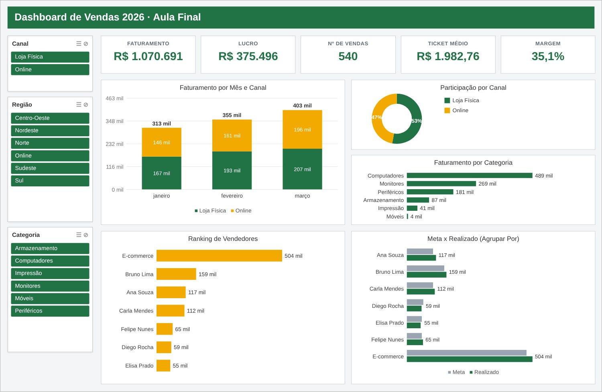
O resultado: loja física + e-commerce num painel só, com auditoria de cadastro e meta x realizado.
Seu progresso: 0 de 72 passos
Antes de começar
A loja de informática da Aula 12 cresceu: agora tem a loja física (vendas num .xlsx exportado pelo PDV) e o e-commerce (pedidos num .csv de outro sistema, com colunas de outro jeito). Produtos e vendedores ficam num terceiro arquivo de cadastro. A diretoria quer o trimestre inteiro num painel, comparando o realizado com a meta de cada vendedor.
A turma vai resolver duas vezes: primeiro só com fórmulas (PROCX, SOMASE, SOMASES), depois com Power Query. No fim, os dois resultados são conferidos e o processo do Power Query recebe o mês de abril sem refazer nada.
Ao final da aula, o aluno sabe
Buscar dados em outra tabela com PROCX e entender seus 4 argumentos
Resumir com SOMASE e SOMASES, inclusive em matriz com referências mistas ($)
Juntar bases de arquivos e formatos diferentes com Acrescentar Consultas
Extrair colunas de cadastros com Mesclar Consultas e escolher o tipo de junção
Auditar dados com a junção Antiesquerda e corrigir na origem
Resumir com Agrupar Por e Dinamizar Coluna e conferir com as fórmulas
Calcular Meta x Realizado do jeito certo (Campo Calculado)
Montar e atualizar um dashboard com segmentações conectadas
Baixe o Pacote Completo (.zip) e extraia em Documentos: você terá a pasta Aula13_Final com todas as subpastas prontas. Os caminhos de todos os passos partem dela.
O caminho dos dados
Fontesxlsx + csv + cadastros
PrepararstgLoja · stgOnline
JuntarAcrescentar
CruzarMesclar (PROCX)
ResumirAgrupar (SOMASES)
CarregarfVendas · Metas
Analisartabelas dinâmicas
Visualizardashboard
AtualizarCtrl+Alt+F5
Em verde, o Power Query (extrair, transformar, carregar). Em cinza, os recursos do Excel que já existiam. A Parte 1 faz as etapas verdes à mão, com fórmulas.
Problemas plantados nos dados
Problema
Exemplo nos arquivos
Com fórmulas
No Power Query
Dados em dois arquivos e formatos
Vendas_Loja.xlsx + Vendas_Online.csv
copiar e colar (4.2)
6.1 Acrescentar Consultas
Colunas com outros nomes
Pedido, SKU, Qtd, Valor_Unit
renomear à mão
5.10 Renomear
Linhas vazias
;;;;; no CSV
apagar à mão
5.9 Remover Vazio
Código em minúsculo
p006, p007, p008
PROCX ignora
5.11 MAIÚSCULAS
Coluna que não existe
online sem vendedor
digitar V07
5.12 Coluna Personalizada
Produto sem cadastro
P011 Cadeira Gamer
"Não cadastrado" escondido
7.3 Antiesquerda + 7.5 correção
Informação em outra tabela
categoria, custo, vendedor, região, meta
2.2–2.5 PROCX
7.1 e 7.7 Mesclar
Resumo por critérios
faturamento por categoria × mês; realizado × meta
3.1–3.5 SOMASE/SOMASES
9.2–9.5 Agrupar Por + Dinamizar
Números de conferência
Indicador
Jan–Mar
Com abril (módulo 13)
Vendas da loja / online
300 / 240
404 / 328
Faturamento total
R$ 1.070.691,00
R$ 1.429.437,70
Lucro
R$ 375.496,00
R$ 508.747,70
Faturamento só da loja (Parte 1)
R$ 566.870,00
R$ 761.456,00
Ticket médio
R$ 1.982,76
R$ 1.952,78
Plano de aula sugerido
Tempo
Conteúdo
Módulos
Aula 1 · 0–10 min
Contexto: duas lojas, dois sistemas, uma diretoria com pressa
Antes de começar
10–50 min
PROCX, SOMASE, SOMASES e Meta x Realizado com fórmulas
1, 2, 3
50–60 min
Onde as fórmulas sofrem: abrir o CSV e listar o trabalho manual
4
Aula 2 · 0–30 min
Conectar as fontes e preparar stgLoja e stgOnline
5
30–60 min
Acrescentar, mesclar, auditar e corrigir o cadastro; colunas calculadas
6, 7, 8
Aula 3 · 0–20 min
Agrupar Por, Dinamizar e conferência com as fórmulas
Antes de qualquer fórmula, cada aluno precisa ter a pasta da aula no computador, do jeitinho que está no pacote. Se a pasta estiver certa, todo o resto funciona.
1.1
Baixe o pacote e extraia a pasta Aula13_Final
Clique no botão verde Baixar Pacote Completo (.zip) no topo desta página.
Abra a pasta Downloads do computador e ache o arquivo Pacote_Aula13_Completo.zip.
Clique nele com o botão direito do mouse › Extrair Tudo... › escolha a pasta Documentos › clique em Extrair.
Abra Documentos › Aula13_Final. Você deve ver 3 pastas e 1 arquivo, igual ao print.
Atenção
Não trabalhe com os arquivos dentro do .zip. O Windows deixa abrir, mas o Excel abre como somente leitura e o Power Query não encontra o caminho depois. Sempre extraia primeiro.
Pasta / arquivo
Para que serve
Quando usar
Aula13_Formulas.xlsx
Planilha para treinar PROCX, SOMASE e SOMASES
Parte 1 (módulos 2 a 4)
Fontes/
As 3 bases que o Power Query vai ler: Vendas_Loja.xlsx, Vendas_Online.csv e Cadastros.xlsx
Parte 2 (módulos 5 a 10)
Extra_Abril/
As mesmas bases com o mês de abril incluído
Módulo 13 (atualizar)
Gabarito/
Aula13_Formulas_Gabarito.xlsx com todas as fórmulas prontas e o código M completo
Para conferir no final
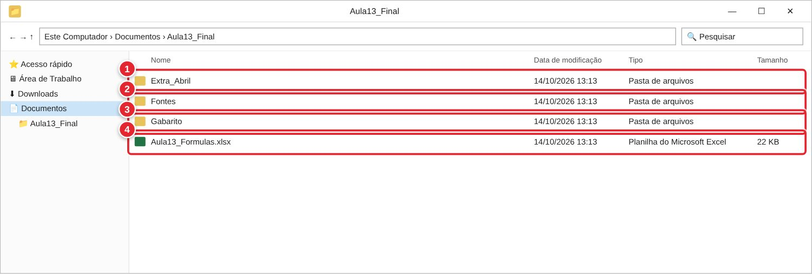
1Extra_Abril
2Fontes
3Gabarito
4Aula13_Formulas.xlsx
Ilustração · passo 1.1 · clique para ampliar1.2
Abra Aula13_Formulas.xlsx e conheça as 4 planilhas
Dê dois cliques em Aula13_Formulas.xlsx. Se aparecer uma faixa amarela escrita Habilitar Edição, clique nela.
Olhe para a parte de baixo da tela. Lá ficam as abas (as "páginas" do arquivo):
Resumo: onde vamos montar os totais com SOMASE e SOMASES.
Loja: as 300 vendas da loja física de janeiro a março (tabela tbLoja).
Produtos: o cadastro dos 10 produtos (tabela tbProdutos).
Vendedores: os 7 vendedores, a região e a meta de cada um (tabela tbVendedores).
Clique na aba Loja.
Explicando bem fácil
Pense no arquivo como um caderno: cada aba é uma folha. A aba Loja diz o que foi vendido (só o código). As abas Produtos e Vendedores dizem quem é quem. A PROCX é a ponte entre as folhas.
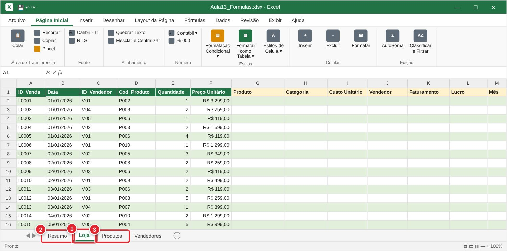
1Aba Loja (clique aqui)
2Aba Resumo
3Abas de cadastro
Ilustração · passo 1.2 · clique para ampliar1.3
Entenda a tabela tbLoja e as colunas amarelas
Clique em qualquer célula da tabela, por exemplo A2. Aparece uma guia nova no topo: Design da Tabela. Clique nela e veja, à esquerda, o Nome da Tabela: tbLoja.
Colunas A até F (verde): vieram do sistema da loja. Não mexa.
Colunas G até M (amarelo): estão vazias. Você vai preencher com fórmulas.
Cod_Produto e ID_Vendedor são as chaves: códigos que existem também nas abas Produtos e Vendedores.
Dica
Tabela formatada (criada com Ctrl+T) é diferente de um intervalo comum: quando você escreve uma fórmula na primeira linha, ela desce sozinha até o fim. Por isso todas as bases desta aula são tabelas.
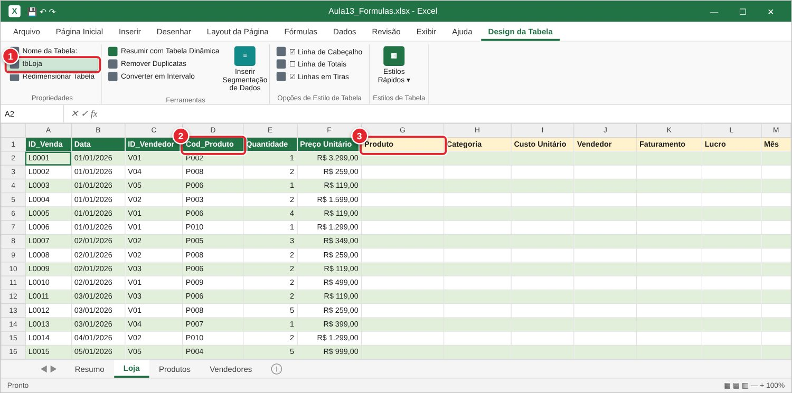
1Nome da tabela
2Chave do produto
3Colunas para preencher
Ilustração · passo 1.3 · clique para ampliar
Módulo 2
PROCX: buscar informação em outra tabela
A venda só tem o código P002. Para saber que é um Notebook Basic 15, da categoria Computadores, que custa R$ 2.300,00, a PROCX vai até a aba Produtos, acha o código e traz a informação de volta.
2.1
Clique na célula G2 (primeira linha da coluna Produto)
Clique uma vez na célula G2, logo abaixo do título amarelo Produto. A borda verde mostra que ela está selecionada e a Caixa de Nome (canto esquerdo, acima das letras) mostra G2.
Dica
Sempre confira a Caixa de Nome antes de digitar. Ela é o "você está aqui" do Excel.
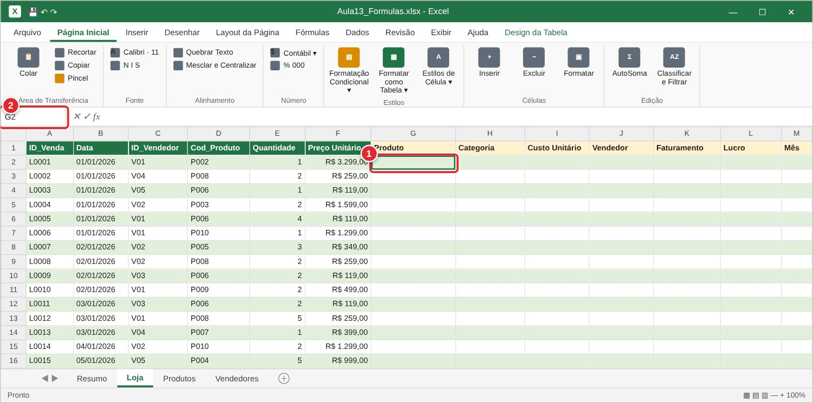
1Célula G2
2Caixa de Nome
Ilustração · passo 2.1 · clique para ampliar2.2
Digite a PROCX do Produto
Com G2 selecionada, digite exatamente (pode copiar):
Ao digitar =PROCX( o Excel mostra a dica com os argumentos. Leia como uma frase:
Argumento
O que você escreve
Em português de criança
valor_procurado
[@Cod_Produto]
O que eu procuro? O código desta linha (o @ quer dizer "desta linha").
matriz_pesquisa
tbProdutos[Cod_Produto]
Onde eu procuro? Na coluna de códigos do cadastro.
matriz_retorno
tbProdutos[Produto]
O que eu trago de volta? O nome do produto que está na mesma linha.
se_não_encontrada
"Não cadastrado"
E se não achar? Escreve isso no lugar de dar erro #N/D.
Dica
Você não precisa digitar tbProdutos[Cod_Produto] letra por letra: depois do primeiro ;, clique na aba Produtos e selecione a coluna Cod_Produto com o mouse (passe o mouse no topo do cabeçalho até virar uma setinha preta ⬇ e clique). O Excel escreve o nome sozinho.
Atenção
No Excel em português o separador é ponto e vírgula;. Se você copiar uma fórmula de um site em inglês com vírgula, troque por ponto e vírgula.
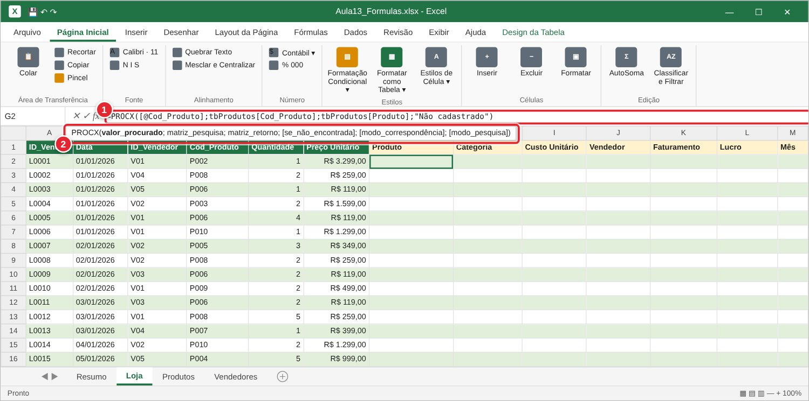
1Fórmula na barra
2Dica de argumentos
Ilustração · passo 2.2 · clique para ampliar2.3
Tecle Enter e veja a coluna inteira se preencher
Aperte Enter. Repare em três coisas:
G2 mostra Notebook Basic 15 (o código P002 foi encontrado).
A fórmula desceu sozinha até a linha 301: é a coluna calculada da tabela.
Aparece um pequeno ícone de raio ⚡ ao lado. É só o Excel avisando que preencheu a coluna. Pode ignorar.
Dica
Se a fórmula não desceu sozinha, provavelmente você digitou fora da tabela ou desligou o preenchimento automático. Selecione G2, copie (Ctrl+C), selecione G3 até G301 e cole (Ctrl+V).
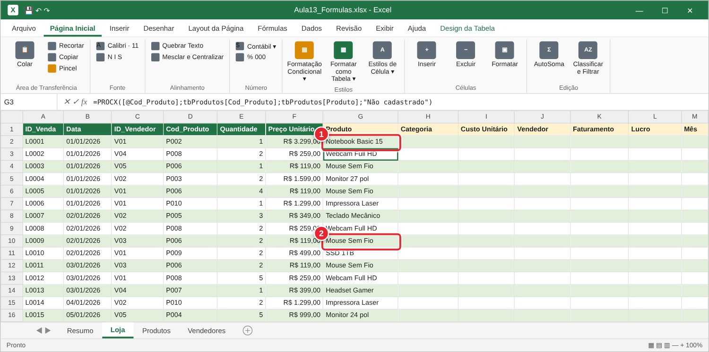
1Resultado em G2
2Coluna preenchida sozinha
Ilustração · passo 2.3 · clique para ampliar2.4
Repita a PROCX para Categoria e Custo Unitário
A receita é a mesma; só muda a matriz_retorno (o que você quer trazer). Clique em H2, digite, Enter. Depois I2, digite, Enter.
Repare no padrão: chave da venda → coluna de chave do cadastro → coluna que eu quero. Toda PROCX desta aula segue esse desenho. No Power Query, a mesma ideia se chama Mesclar Consultas (módulo 7).
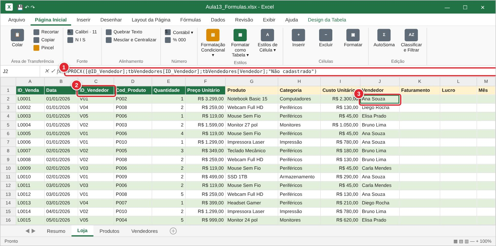
1Fórmula
2Chave usada
3Resultado
Ilustração · passo 2.5 · clique para ampliar2.6
Crie Faturamento, Lucro e Mês
Estas três colunas não buscam nada fora; são contas da própria linha. Uma de cada vez, clique na célula, digite e tecle Enter:
Fora de tabela, essa fórmula "derrama" o resultado em 3 células. Dentro de uma tabela, dá #ESPALHAR!. Teste em G2 para a turma ver, depois aperte Ctrl+Z para voltar.
Por que assim?
Esse é um dos motivos para levar a junção para o Power Query: a Mesclagem traz quantas colunas você quiser, sem erro e sem uma fórmula por coluna.
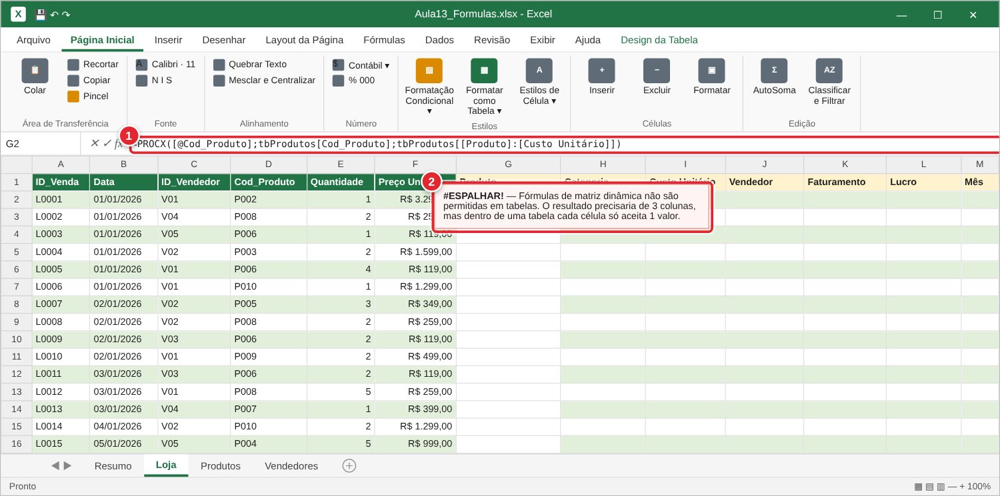
1Fórmula de várias colunas
2Mensagem do erro
Ilustração · passo 2.7 · clique para ampliar
Módulo 3
SOMASE e SOMASES: resumir por critérios
Com a base completa, a pergunta muda de "quem é esse código?" para "quanto vendemos de cada coisa?". SOMASE soma com 1 condição; SOMASES soma com várias.
3.1
Vá para a aba Resumo e escreva a SOMASE
Clique na aba Resumo. Clique em B5 (ao lado de Computadores) e digite:
B5 · SOMASE
=SOMASE(tbLoja[Categoria];A5;tbLoja[Faturamento])
Argumento
Valor
Pergunta
intervalo
tbLoja[Categoria]
Em que coluna eu olho o critério?
critérios
A5
Qual valor eu quero? (o texto Computadores da célula A5)
intervalo_soma
tbLoja[Faturamento]
O que eu somo quando a linha bate?
Explicando bem fácil
Imagine 300 cartões de venda numa mesa. A SOMASE pega só os cartões em que está escrito Computadores e soma o valor deles. Os outros ficam na mesa.
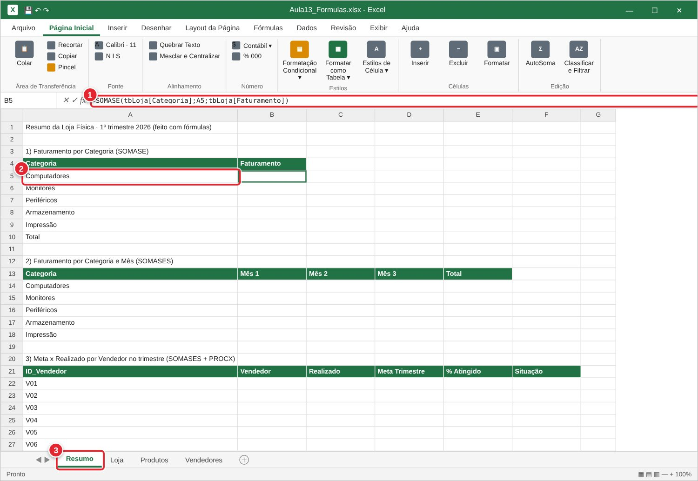
1Fórmula
2Critério em A5
3Aba Resumo
Ilustração · passo 3.1 · clique para ampliar3.2
Copie para baixo e some o total
Clique em B5. Leve o mouse ao quadradinho verde do canto inferior direito da célula até o cursor virar uma cruz preta fina ✚. Dê dois cliques: a fórmula desce até B9. Em B10 digite =SOMA(B5:B9).
Resultado esperado:
Categoria
Faturamento
Computadores
R$ 248.542,00
Monitores
R$ 147.483,00
Periféricos
R$ 97.064,00
Armazenamento
R$ 50.399,00
Impressão
R$ 23.382,00
Total
R$ 566.870,00
Dica
O A5 virou A6, A7... na cópia (referência relativa). Os nomes de tabela tbLoja[...] não mudam: eles sempre apontam para a coluna inteira.
Na SOMASES a ordem muda: primeiro o que somar, depois os pares coluna do critério; critério.
Parte
Significado
tbLoja[Faturamento]
o que somar
tbLoja[Categoria];$A14
1º par: categoria igual ao texto da coluna A
tbLoja[Mês];B$13
2º par: mês igual ao número do cabeçalho (1, 2 ou 3)
Por que assim?
Os cifrões são travas. $A14 trava a coluna A (a categoria sempre vem da coluna A). B$13 trava a linha 13 (o mês sempre vem do cabeçalho). Assim uma única fórmula serve para a matriz inteira. Para colocar o $ rápido, clique na referência dentro da fórmula e aperte F4 até chegar no formato certo.
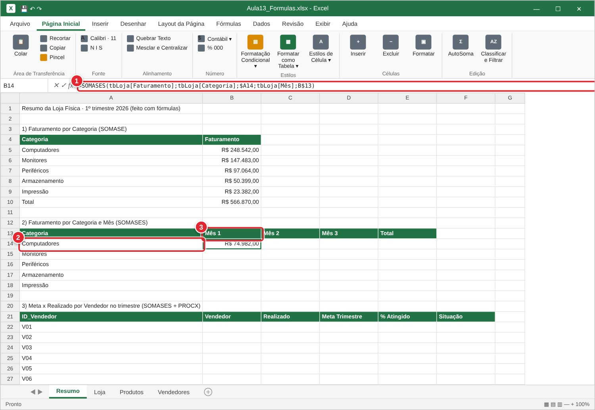
1Fórmula
2$A14: trava a coluna
3B$13: trava a linha
Ilustração · passo 3.3 · clique para ampliar3.4
Arraste para a direita e para baixo
Clique em B14 e arraste a alça de preenchimento (✚) até D14. Com B14:D14 ainda selecionadas, dê dois cliques na alça para descer até a linha 18. Em E14 digite =SOMA(B14:D14) e copie para baixo.
Confira dois valores: Computadores, Mês 1 = R$ 74.982,00 e Armazenamento, Mês 3 = R$ 24.950,00. A coluna Total precisa bater com o bloco 1.
Dica
Guarde essa matriz: no módulo 9 vamos gerar a mesma tabela no Power Query com Agrupar Por + Dinamizar Coluna e comparar número por número.
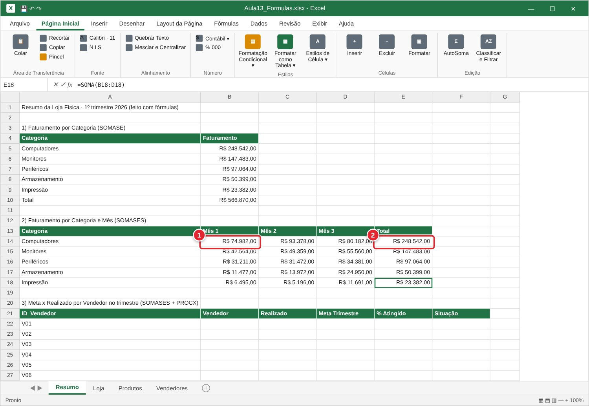
1Matriz preenchida
2Total por categoria
Ilustração · passo 3.4 · clique para ampliar3.5
Meta x Realizado: PROCX + SOMASES + SEERRO + SE
No bloco 3, os IDs dos vendedores já estão na coluna A. Preencha a linha 22 e copie para baixo até a 27:
Formate E22:E27 como porcentagem (Ctrl+Shift+5). Ana Souza deve mostrar 111,4% e Diego Rocha 89,5%.
Atenção
A meta do cadastro é mensal. Como a base tem 3 meses, multiplicamos por 3. Erro clássico: comparar o realizado do trimestre com a meta de um mês só e achar que todo mundo bateu 300%.
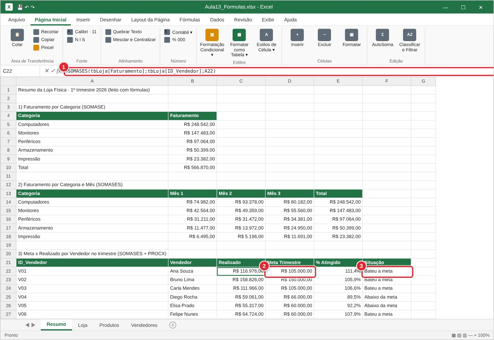
1Realizado com SOMASES
2Meta × 3
3Situação com SE
Ilustração · passo 3.5 · clique para ampliar3.6
Destaque o % com Barras de Dados
Selecione E22:E27. Vá em Página Inicial›Formatação Condicional›Barras de Dados e escolha Preenchimento Gradual › Verde. As barras deixam o ranking visível sem gráfico.
Dica
Formatação condicional é a forma mais barata de "dashboard" com fórmulas. O limite é que ela não filtra por canal, região ou categoria com um clique; para isso vamos usar tabela dinâmica + segmentação na Parte 2.
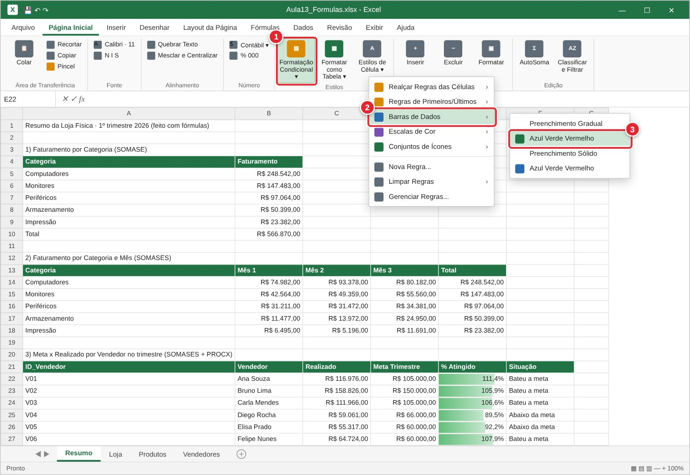
1Formatação Condicional
2Barras de Dados
3Preenchimento Gradual Verde
Ilustração · passo 3.6 · clique para ampliar
Módulo 4
Onde as fórmulas começam a sofrer
Até aqui só existia a loja física. Agora a diretoria pede o trimestre inteiro, somando a loja online, que vem de outro sistema, em outro formato.
4.1
Abra Vendas_Online.csv e compare com a loja
Na pasta Fontes, dê dois cliques em Vendas_Online.csv. Compare com a aba Loja:
Na loja física (tbLoja)
No e-commerce (CSV)
Problema
ID_Venda
Pedido
nome diferente
Data
Data_Pedido
nome diferente
Cod_Produto
SKU
nome diferente e às vezes minúsculo (p006)
Quantidade / Preço Unitário
Qtd / Valor_Unit
nome e ordem diferentes
ID_Vendedor
(não existe)
toda venda online é do vendedor V07 E-commerce
—
UF
coluna que a loja não tem
—
linhas vazias ;;;;;
sujeira na exportação
—
produto P011
não existe no cadastro
Feche o CSV sem salvar (se o Excel perguntar, clique em Não Salvar).
Atenção
Nunca salve um CSV aberto no Excel por cima do original: o Excel pode trocar o separador, a data e os decimais e estragar a fonte para o Power Query.
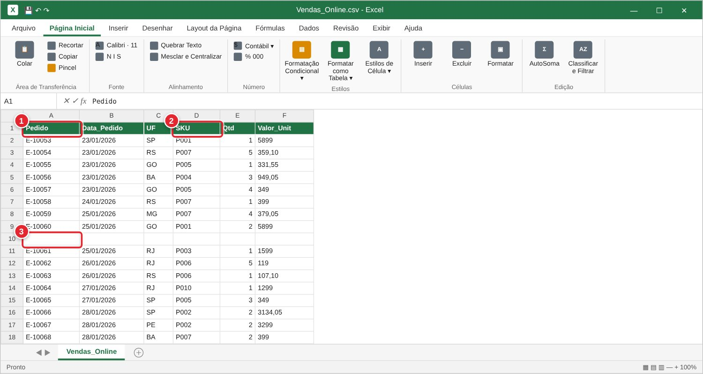
1Pedido ≠ ID_Venda
2SKU ≠ Cod_Produto
3Linha vazia
Ilustração · passo 4.1 · clique para ampliar4.2
Faça a conta do trabalho manual
Para juntar o online usando só fórmulas, todo mês alguém teria que:
Abrir o CSV, reordenar e renomear 5 colunas.
Apagar linhas vazias e corrigir códigos minúsculos.
Criar a coluna ID_Vendedor com V07.
Copiar e colar embaixo da tbLoja sem esquecer nenhuma linha.
Conferir se as PROCX desceram e se nenhum total ficou com intervalo errado.
Critério
Fórmulas (PROCX/SOMASES)
Power Query
Juntar bases de arquivos diferentes
Copiar e colar à mão
Acrescentar Consultas, automático
Trazer colunas de cadastro
1 PROCX por coluna, recalcula sempre
Mesclar Consultas, várias colunas de uma vez
Resumir por critério
SOMASE/SOMASES célula por célula
Agrupar Por (e tabela dinâmica)
Limpeza (espaços, maiúsculas, vazios)
Fórmulas auxiliares ou à mão
Um clique, gravado como etapa
Mês novo
Repetir tudo
Atualizar Tudo
Maiúscula x minúscula na chave
PROCX ignora (p006 = P006)
Mesclar diferencia: precisa padronizar
Quando é melhor
Cálculos pontuais, poucas linhas, quem vai editar à mão
Bases que chegam todo mês, várias fontes, muitas linhas
Por que assim?
Fórmula não é "errada". A ideia da aula é saber escolher: fórmula para pergunta rápida, Power Query para processo que se repete. E usar uma para conferir a outra (módulo 9).
Parte 2 · Do jeito do Power Query
Módulo 5
Conectar as três fontes no Power Query
Agora começamos do zero, num arquivo novo. O Power Query vai ler os arquivos da pasta Fontes sem copiar nada à mão. Primeiro criamos uma consulta "de preparo" (staging, prefixo stg) para cada base.
5.1
Crie e salve um arquivo novo: Aula13_PowerQuery.xlsx
Feche o Aula13_Formulas.xlsx (salve, se quiser guardar suas fórmulas).
Abra o Excel › Pasta de trabalho em branco.
Aperte F12 (Salvar como). Navegue até Documentos › Aula13_Final.
Em Nome do arquivo digite Aula13_PowerQuery e clique em Salvar.
Dica
Salvar logo no começo, na mesma pasta das fontes, deixa tudo junto e evita perder trabalho. Salve de novo com Ctrl+B a cada módulo.
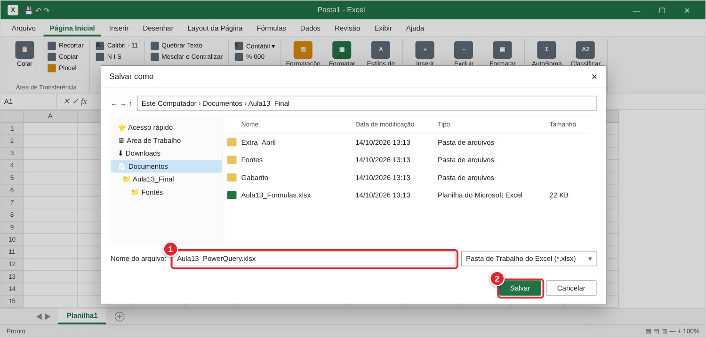
1Nome do arquivo
2Salvar
Ilustração · passo 5.1 · clique para ampliar5.2
Dados › Obter Dados › De Arquivo › Da Pasta de Trabalho do Excel
Clique na guia Dados (lá em cima). No canto esquerdo, clique em Obter Dados. Passe o mouse em De Arquivo (não precisa clicar; o submenu abre sozinho) e clique em Da Pasta de Trabalho do Excel.
Dica
Usamos Da Pasta de Trabalho do Excel porque a loja física chega em .xlsx. Para o CSV do online vamos usar outra porta (passo 5.7).
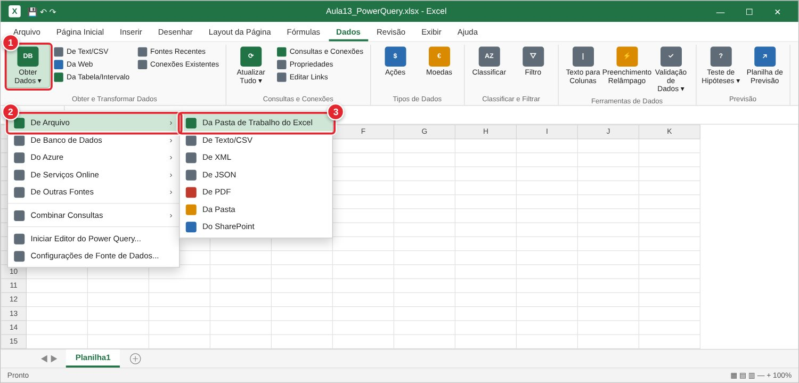
1Obter Dados
2De Arquivo
3Da Pasta de Trabalho do Excel
Ilustração · passo 5.2 · clique para ampliar5.3
Escolha Fontes › Vendas_Loja.xlsx e clique em Importar
Na janela Importar Dados, dê dois cliques em Aula13_Final, depois dois cliques em Fontes. Clique uma vez em Vendas_Loja.xlsx e depois em Importar.
Dica
O CSV não aparece aqui porque o filtro no canto mostra só arquivos do Excel. Está certo.
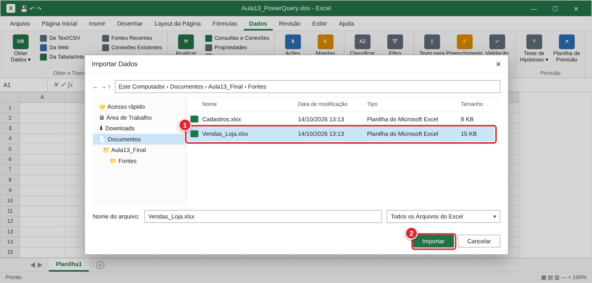
1Vendas_Loja.xlsx
2Importar
Ilustração · passo 5.3 · clique para ampliar5.4
No Navegador, escolha tbLoja e clique em Transformar Dados
O Navegador mostra dois itens: tbLoja (ícone verde de tabela) e Loja (a planilha inteira). Clique em tbLoja. A prévia aparece à direita. Clique em Transformar Dados (não em Carregar).
Explicando bem fácil
Carregar jogaria os dados direto na planilha. Transformar Dados abre o Editor do Power Query, a "cozinha" onde preparamos tudo antes de servir.
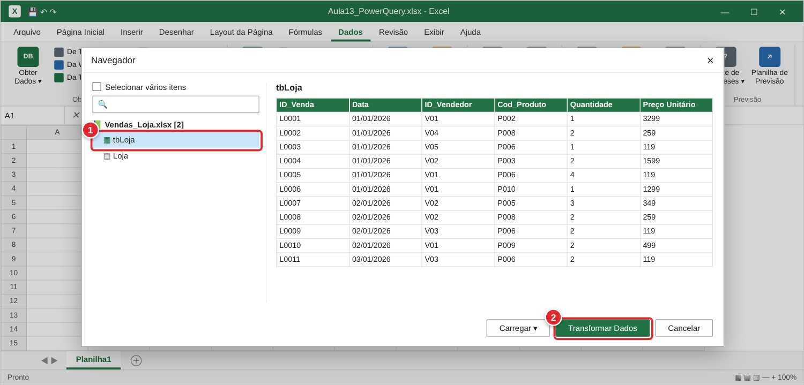
1tbLoja
2Transformar Dados
Ilustração · passo 5.4 · clique para ampliar5.5
Renomeie para stgLoja e corrija os tipos Data e Preço
O Editor do Power Query abriu. Faça três coisas:
Nome: no painel da direita, em Propriedades › Nome, apague tbLoja, digite stgLoja e tecle Enter.
Data: a coluna veio como Data/Hora (com 00:00:00). Clique no ícone de tipo à esquerda do nome Data e escolha Data. Se aparecer a pergunta Alterar Tipo de Coluna, clique em Substituir atual.
Preço Unitário: clique no ícone de tipo dele e escolha Número Decimal (o online tem centavos; os dois precisam ser iguais para juntar).
Dica
O ícone no cabeçalho diz o tipo: ABC = texto, 123 = número inteiro, 1.2 = decimal, ▦ = data. Tipo certo é o que faz a soma somar e o filtro de data funcionar.
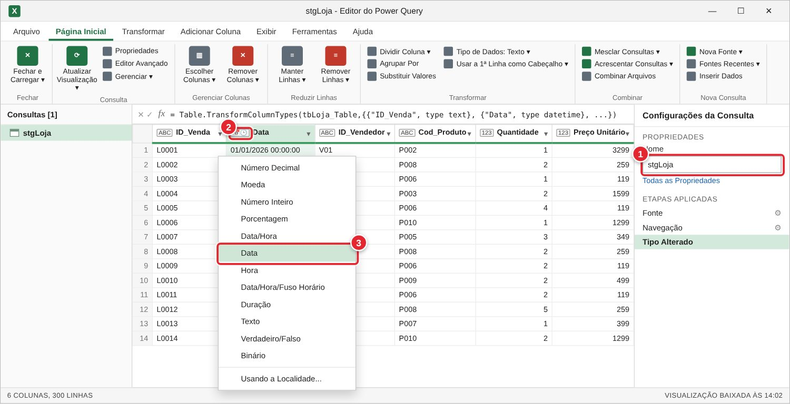
1Nome da consulta
2Ícone de tipo da coluna Data
3Data
Ilustração · passo 5.5 · clique para ampliar5.6
Adicione a coluna Canal = "Loja Física"
Clique na guia Adicionar Coluna › Coluna Personalizada. Preencha:
Nome da nova coluna: Canal
Fórmula: = "Loja Física" (com aspas: é um texto fixo)
Confira o ✓ Nenhum erro de sintaxe e clique em OK. Depois clique no ícone ABC123 da nova coluna e escolha Texto.
Por que assim?
Por que criar uma coluna que repete a mesma palavra em todas as linhas? Porque, depois de juntar loja e online numa tabela só, é essa coluna que diz de onde veio cada venda. Sem ela, o dashboard não consegue separar os canais.
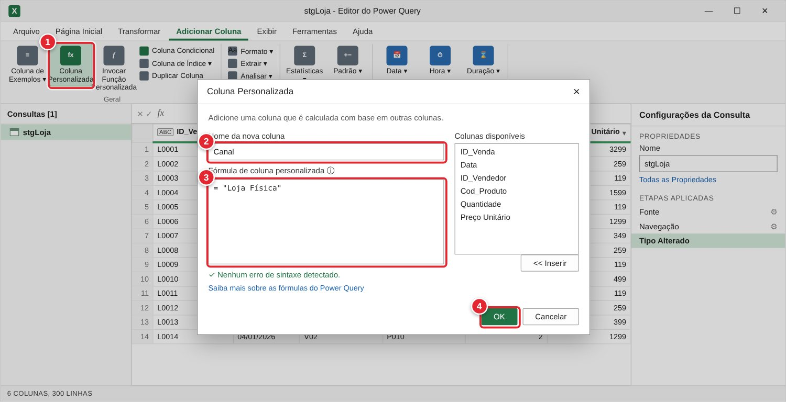
1Coluna Personalizada
2Nome
3Fórmula
4OK
Ilustração · passo 5.6 · clique para ampliar5.7
Nova Fonte › Arquivo › Texto/CSV
Sem sair do editor: guia Página Inicial › Nova Fonte (grupo Nova Consulta, à direita) › Arquivo › Texto/CSV. Na janela, abra Fontes, selecione Vendas_Online.csv e clique em Importar.
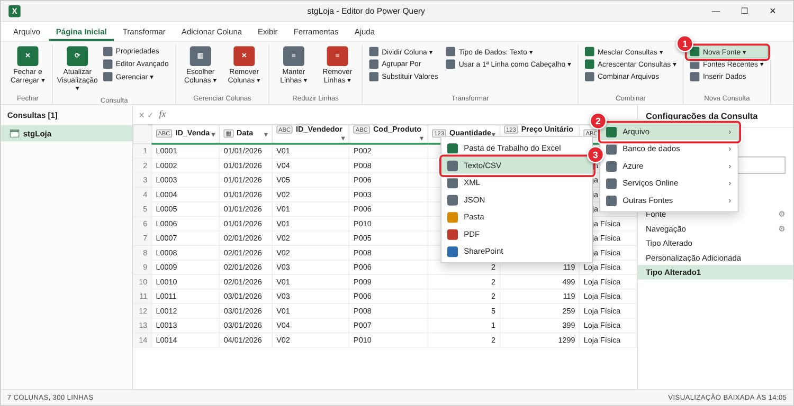
1Nova Fonte
2Arquivo
3Texto/CSV
Ilustração · passo 5.7 · clique para ampliar5.8
Confira a leitura do CSV e clique em OK
A janela mostra uma prévia do arquivo. Confira:
Origem do Arquivo: 65001: Unicode (UTF-8).
Delimitador: Ponto e vírgula.
Se a prévia mostrar tudo numa coluna só, troque o delimitador. Clique em OK.
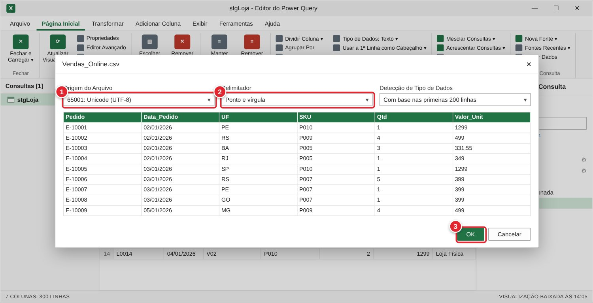
1Origem UTF-8
2Ponto e vírgula
3OK
Ilustração · passo 5.8 · clique para ampliar5.9
Renomeie para stgOnline e remova as linhas vazias
A nova consulta chegou com o nome Vendas_Online. Renomeie para stgOnline (igual ao passo 5.5).
Depois clique na setinha ▾ do cabeçalho Pedido e escolha Remover Vazio. O rodapé passa de 242 para 240 linhas.
Dica
Filtramos pela coluna Pedido porque ela é a chave: toda venda de verdade tem número de pedido. Linha sem pedido é sujeira da exportação.
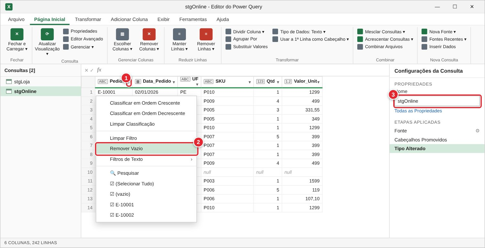
1Setinha do filtro de Pedido
2Remover Vazio
3Nome stgOnline
Ilustração · passo 5.9 · clique para ampliar5.10
Renomeie as colunas para os nomes da loja
Para juntar duas tabelas, as colunas precisam ter exatamente o mesmo nome (maiúsculas, acentos e espaços contam). Dê dois cliques no nome de cada cabeçalho, digite o novo nome e tecle Enter:
Antes (CSV)
Depois (igual à loja)
Pedido
ID_Venda
Data_Pedido
Data
SKU
Cod_Produto
Qtd
Quantidade
Valor_Unit
Preço Unitário
UF
UF (fica igual)
Atenção
A ordem das colunas não importa no Acrescentar: o Power Query casa pelo nome. Já um nome errado (Preco Unitario sem acento) vira uma coluna a mais, com metade vazia.
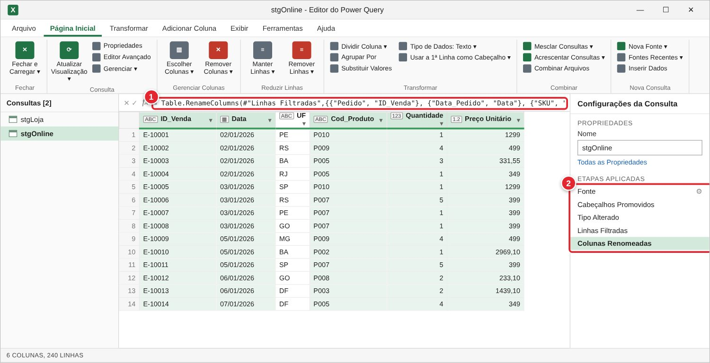
1Código M da renomeação
2Etapas aplicadas
Ilustração · passo 5.10 · clique para ampliar5.11
Coloque Cod_Produto em MAIÚSCULAS
Clique no cabeçalho Cod_Produto (a coluna fica verde). Vá em Transformar › Formato › MAIÚSCULAS. Os 4 códigos minúsculos do site (p006, p007 duas vezes e p008) viram P006, P007 e P008.
Atenção
A PROCX do módulo 2 acharia p006 mesmo minúsculo, porque ela não diferencia maiúsculas. A mesclagem do Power Query diferencia: p006 ≠ P006. Sem este passo, 4 vendas ficariam sem produto.
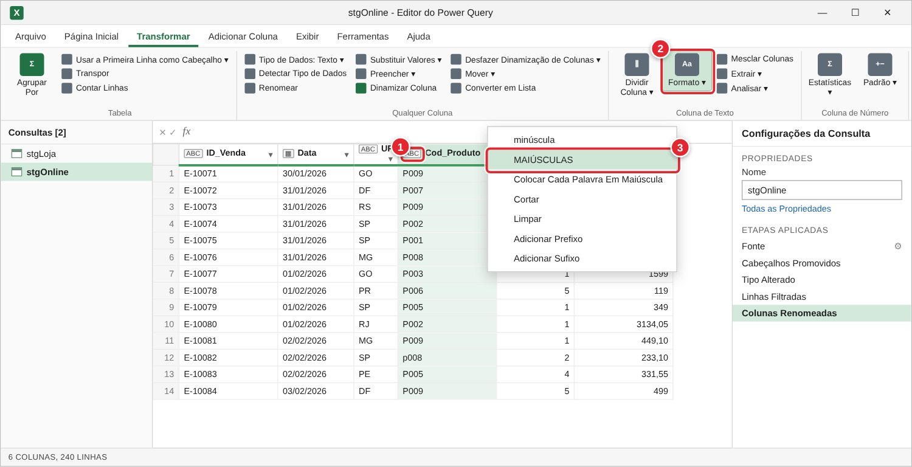
1Selecione Cod_Produto
2Formato
3MAIÚSCULAS
Ilustração · passo 5.11 · clique para ampliar5.12
Crie ID_Vendedor = "V07" e Canal = "Online"
A loja tem vendedor; o online não. No cadastro, o vendedor do site é o V07 – E-commerce. Crie duas colunas personalizadas (repita o passo 5.6 duas vezes):
Nome da nova coluna
Fórmula
ID_Vendedor
= "V07"
Canal
= "Online"
Defina o tipo Texto nas duas. Agora stgOnline tem as mesmas 7 colunas da stgLoja, mais a UF.
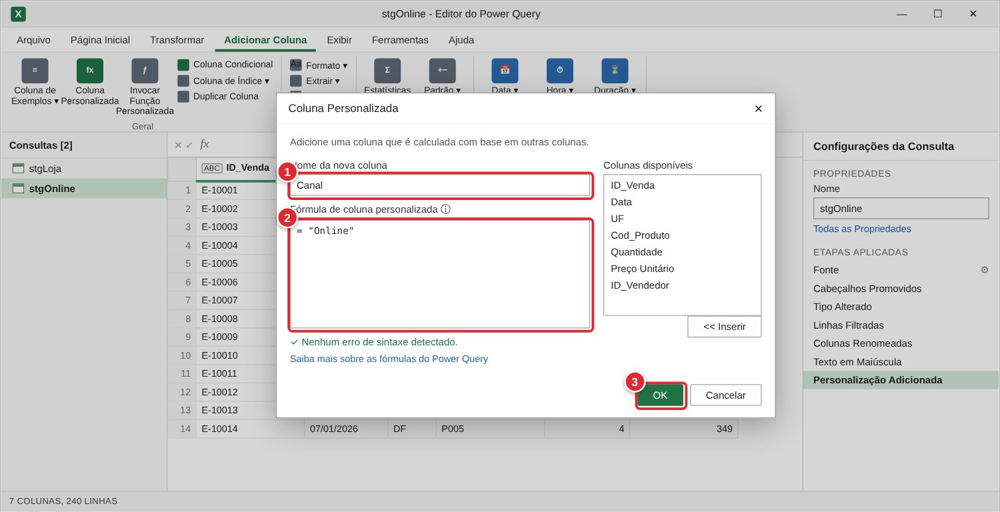
1Nome
2Fórmula
3OK
Ilustração · passo 5.12 · clique para ampliar5.13
Traga os dois cadastros de uma vez
Página Inicial›Nova Fonte›Arquivo›Pasta de Trabalho do Excel › Fontes › Cadastros.xlsx › Importar.
No Navegador:
Marque Selecionar vários itens (lá em cima).
Marque tbProdutos e tbVendedores (as de ícone de tabela).
Clique em OK.
Dica
Sempre prefira a tabela (tbProdutos) à planilha (Produtos): a tabela cresce sozinha quando alguém cadastra um produto novo, e isso vai ser importante no módulo 7.
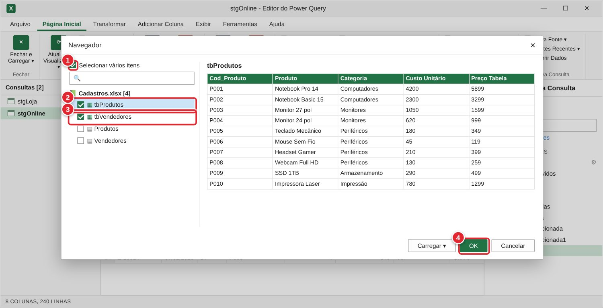
1Selecionar vários itens
2tbProdutos
3tbVendedores
4OK
Ilustração · passo 5.13 · clique para ampliar5.14
Renomeie para dProdutos e dVendedores
No painel Consultas (esquerda), dê dois cliques em tbProdutos, digite dProdutos, Enter. Faça o mesmo: tbVendedores → dVendedores.
Agora o painel tem 4 consultas:
Consulta
Tipo
Linhas
stgLoja
preparo (staging)
300
stgOnline
preparo (staging)
240
dProdutos
dimensão (cadastro)
10
dVendedores
dimensão (cadastro)
7
Por que assim?
Convenção dos prefixos: stg = etapa de preparo, não vai para o relatório; d = dimensão (cadastro, "quem é quem"); f = fato (os acontecimentos, as vendas). Esses nomes vão aparecer na lista de campos da tabela dinâmica.
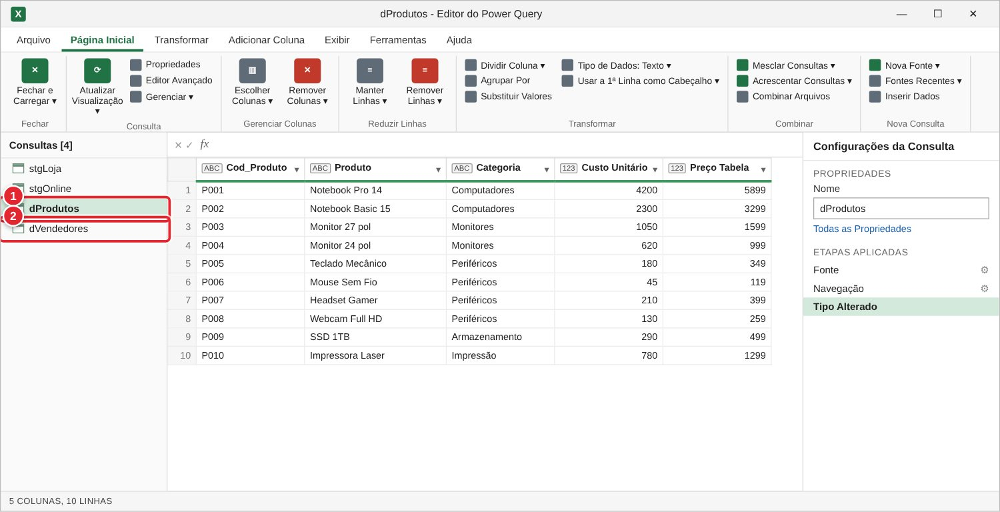
1dProdutos
2dVendedores
Ilustração · passo 5.14 · clique para ampliar
Módulo 6
Juntar loja e online: Acrescentar Consultas
Acrescentar é empilhar: as 240 linhas do online vão para baixo das 300 da loja, numa tabela só. É o "copiar e colar" do módulo 4, só que gravado e automático.
6.1
Acrescentar Consultas › Acrescentar Consultas como Novas
Clique em stgLoja no painel da esquerda. Na guia Página Inicial, clique na setinha de Acrescentar Consultas e escolha Acrescentar Consultas como Novas.
Por que assim?
como Novas cria uma terceira consulta com o resultado e deixa stgLoja e stgOnline intactas. Se escolher só Acrescentar Consultas, a stgLoja vira a junção e você perde a loja sozinha.
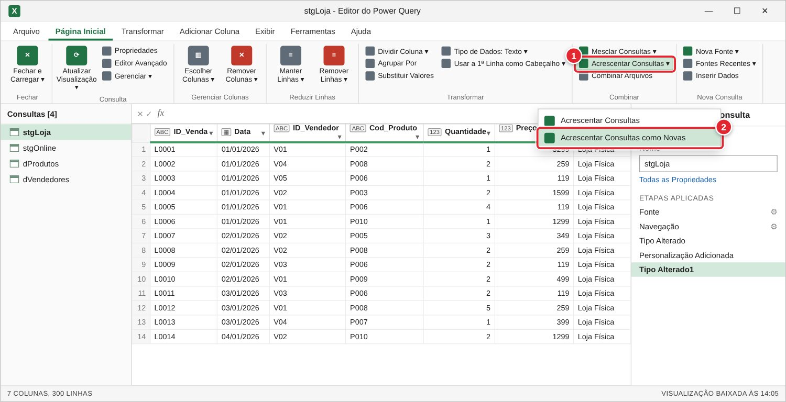
1Acrescentar Consultas
2como Novas
Ilustração · passo 6.1 · clique para ampliar6.2
Escolha stgLoja + stgOnline
Na janela Acrescentar: deixe Duas tabelas; Primeira tabela = stgLoja; Segunda tabela = stgOnline. Clique em OK.
Dica
Com 3 arquivos ou mais (ex.: loja, online e marketplace), marque Três ou mais tabelas e adicione cada uma na lista da direita.
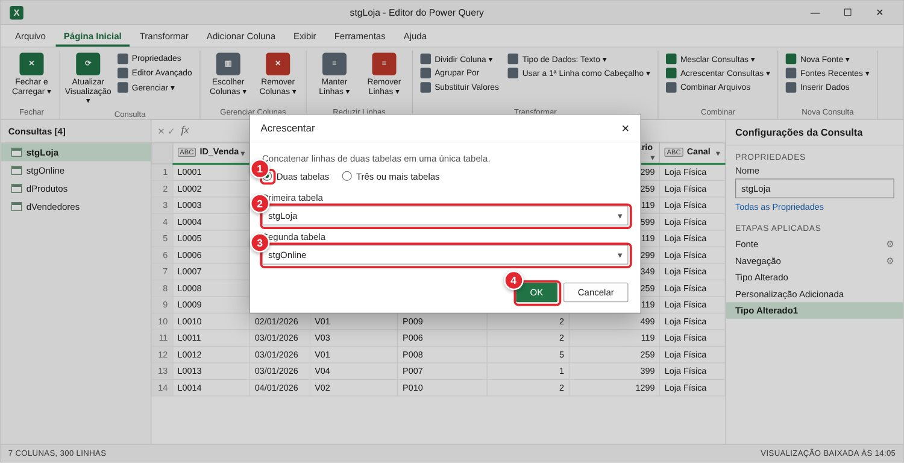
1Duas tabelas
2Primeira
3Segunda
4OK
Ilustração · passo 6.2 · clique para ampliar6.3
Renomeie para fVendas e confira: 540 linhas
A consulta nova nasce como Acrescentar1. Renomeie para fVendas.
Rodapé: 8 colunas, 540 linhas (300 + 240). Se der outro número, volte ao 5.9.
A coluna UF aparece com null nas vendas da loja: a loja não tem essa coluna, então o Power Query completa com vazio. Role até a linha 301 para ver as vendas online com UF preenchida.
Dica
null não é erro: é o "nada" do Power Query. Erro aparece escrito Error, em amarelo.
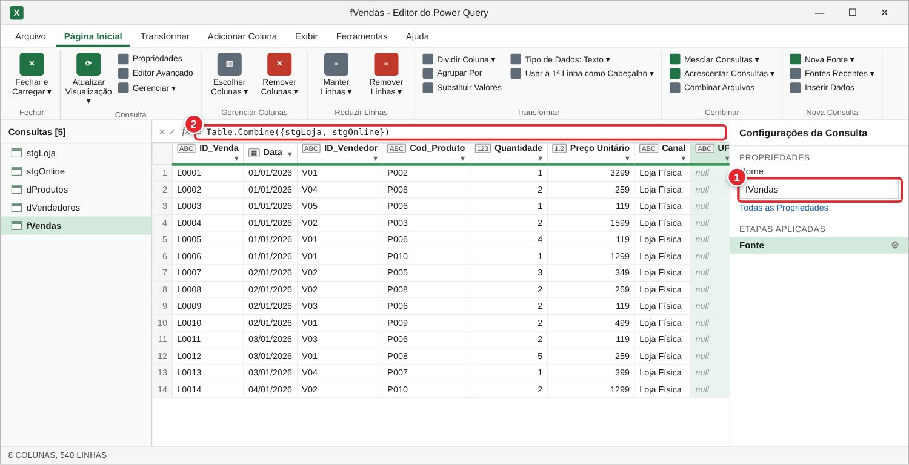
1Nome fVendas
2Table.Combine
Ilustração · passo 6.3 · clique para ampliar
Módulo 7
Extrair de outras tabelas: Mesclar Consultas
Mesclar é a PROCX do Power Query: para cada venda, procura o código no cadastro e traz as colunas que você escolher. Também serve para auditar: achar o que não existe no cadastro.
7.1
Mesclar fVendas com dProdutos pelo Cod_Produto
Com fVendas selecionada, clique em Página Inicial › Mesclar Consultas (o botão, não a setinha). Na janela:
Na tabela de cima (fVendas), clique no cabeçalho Cod_Produto. Ele fica destacado.
Na lista do meio, escolha dProdutos.
Na tabela de baixo, clique em Cod_Produto.
Tipo de Junção: Externa esquerda (todas as vendas, mais o que achar no cadastro).
Leia a mensagem do rodapé: 537 de 540. Três vendas não acharam o produto. Clique em OK mesmo assim; vamos investigar no passo 7.3.
PROCX (módulo 2)
Mesclar Consultas
valor_procurado = [@Cod_Produto]
coluna destacada em cima
matriz_pesquisa = tbProdutos[Cod_Produto]
coluna destacada embaixo
matriz_retorno
escolhida depois, no Expandir (7.2)
se_não_encontrada
fica null
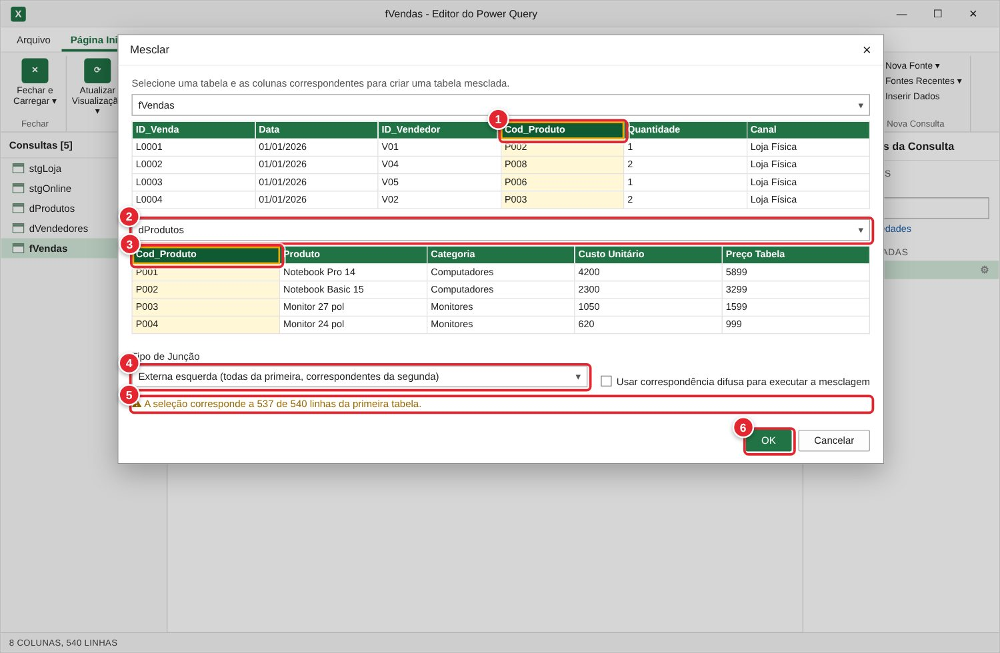
1Chave em fVendas
2Tabela dProdutos
3Chave em dProdutos
4Externa esquerda
5537 de 540
6OK
Ilustração · passo 7.1 · clique para ampliar7.2
Expanda só Produto, Categoria e Custo Unitário
Apareceu uma coluna dProdutos com a palavra Table em cada linha: é o "pacotinho" do cadastro de cada venda. Clique no ícone ⇔ do cabeçalho dela:
Desmarque Cod_Produto (já existe) e Preço Tabela (não precisamos).
Deixe marcados Produto, Categoria e Custo Unitário.
Desmarque Usar o nome da coluna original como prefixo (senão vira dProdutos.Categoria).
Clique em OK.
Por que assim?
Uma mesclagem trouxe 3 colunas. Com PROCX foram 3 fórmulas, uma por coluna, e uma delas deu #ESPALHAR! quando tentamos tudo junto (passo 2.7).
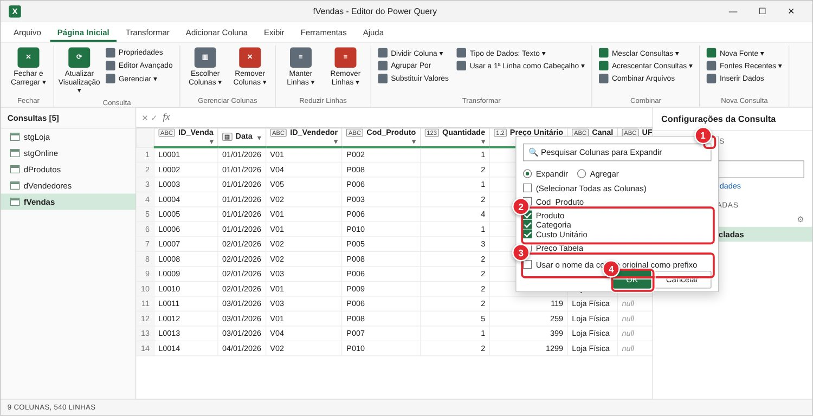
1Ícone de expandir
2Colunas que ficam
3Prefixo desmarcado
4OK
Ilustração · passo 7.2 · clique para ampliar7.3
Auditoria: Mesclar como Novas com junção Antiesquerda
Vamos descobrir quais vendas ficaram sem produto. Com fVendas selecionada: Mesclar Consultas (setinha) › Mesclar Consultas como Novas. Monte igual ao 7.1 (Cod_Produto ↔ dProdutos Cod_Produto), mas em Tipo de Junção escolha Antiesquerda (somente linhas da primeira). Clique em OK.
Tipo de junção
Traz
Uso típico
Externa esquerda
todas da 1ª + o que achar na 2ª
PROCX: completar a base
Interna
só as que existem nas duas
filtrar por uma lista
Antiesquerda
só as da 1ª que NÃO existem na 2ª
auditoria: o que falta cadastrar
Externa completa
tudo das duas
comparar duas listas
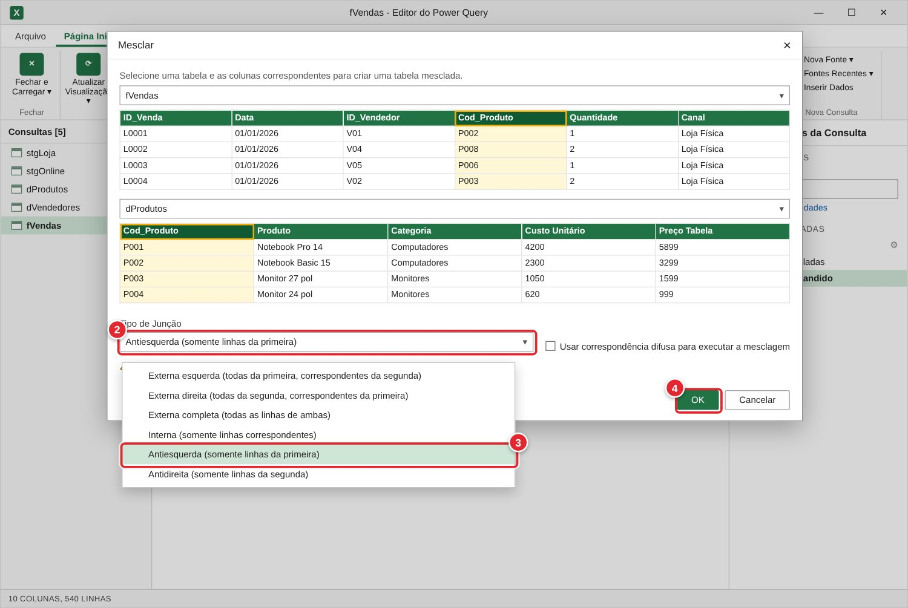
1Mesclar como Novas
2Tipo de Junção
3Antiesquerda
4OK
Ilustração · passo 7.3 · clique para ampliar7.4
Renomeie para Auditoria_SemCadastro: 3 vendas de P011
A consulta nova (Mesclar1) mostra 3 linhas, todas com Cod_Produto = P011. Renomeie para Auditoria_SemCadastro.
O site vendeu uma Cadeira Gamer (P011), mas ninguém cadastrou esse produto. Na fVendas essas linhas ficaram com Produto, Categoria e Custo null, e o lucro delas ficaria errado.
Por que assim?
Na PROCX isso aparece como "Não cadastrado" escondido no meio de 300 linhas. Aqui vira uma consulta de alerta que você confere a cada atualização: se tiver 0 linhas, está tudo certo.
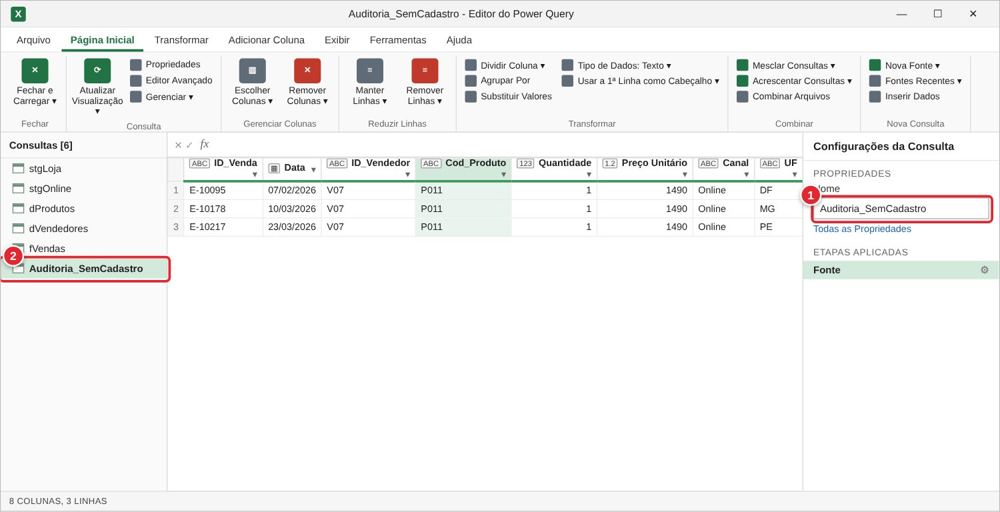
1Nome da consulta
2Consulta de auditoria
Ilustração · passo 7.4 · clique para ampliar7.5
Corrija na origem: cadastre o P011 em Cadastros.xlsx
O certo é corrigir a fonte, não o relatório.
Deixe o Power Query aberto. No Windows, abra Fontes › Cadastros.xlsx.
Na aba Produtos, clique em A12 (primeira linha vazia abaixo da tabela) e digite, apertando Tab entre as células:
P011TabCadeira GamerTabMóveisTab820Tab1490Enter
A tabela cresce sozinha e ganha a linha 12. Salve (Ctrl+B) e feche o Cadastros.xlsx.
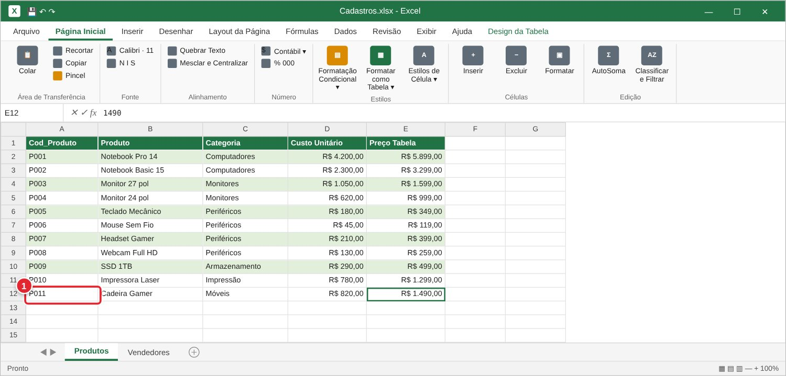
1Linha nova do P011
Ilustração · passo 7.5 · clique para ampliar7.6
Atualize a visualização: Auditoria com 0 linhas
Volte ao Editor do Power Query. Clique na setinha de Atualizar Visualização › Atualizar Tudo.
Auditoria_SemCadastro agora mostra 0 linhas (só os cabeçalhos).
Na fVendas, a mesclagem passa a encontrar 540 de 540, e as vendas do P011 mostram Cadeira Gamer · Móveis.
Por que assim?
Esse é o ciclo de qualidade de dados na vida real: a auditoria acusa → alguém corrige o cadastro → atualiza → a auditoria zera. Mostre isso para a turma; é o argumento mais forte da aula.
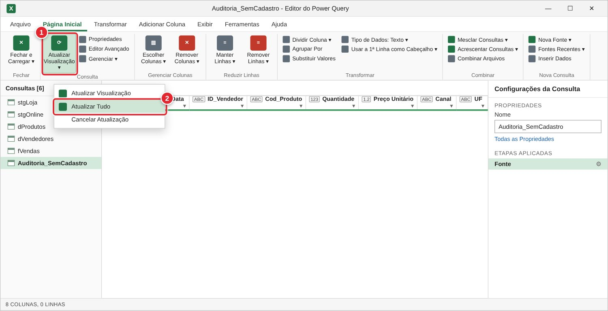
1Atualizar Visualização
2Atualizar Tudo
Ilustração · passo 7.6 · clique para ampliar7.7
Mescle também com dVendedores e expanda Vendedor e Região
Clique em fVendas no painel. Mesclar Consultas (botão) › chave ID_Vendedor em cima, dVendedores no meio, ID_Vendedor embaixo, Externa esquerda. Agora deve aparecer 540 de 540. OK.
No ícone ⇔ da nova coluna dVendedores, deixe só Vendedor e Região, sem prefixo. OK.
Por que assim?
A Meta Mensal não entra aqui: meta é por vendedor e por mês, não por venda. Se ela fosse para cada linha, somar a meta numa tabela dinâmica daria um número sem sentido. Ela entra no módulo 9, depois de agrupar.
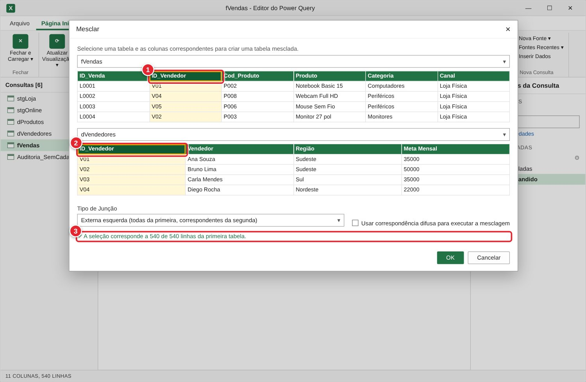
1ID_Vendedor em fVendas
2ID_Vendedor em dVendedores
3540 de 540
Ilustração · passo 7.7 · clique para ampliar
Módulo 8
Colunas calculadas: Faturamento, Lucro, Mês e Faixa
As mesmas contas do passo 2.6, agora feitas uma vez no Power Query, para as 540 linhas, loja e online juntas.
8.1
Coluna Personalizada: Faturamento
Adicionar Coluna›Coluna Personalizada. Nome: Faturamento. Na fórmula, apague o que tiver depois do = e dê dois cliques em Quantidade na lista da direita, digite * e dê dois cliques em Preço Unitário:
Faturamento
= [Quantidade] * [Preço Unitário]
OK.
Dica
No Power Query, nome de coluna vai entre colchetes e não tem @: a fórmula já vale para cada linha (o each do código M).
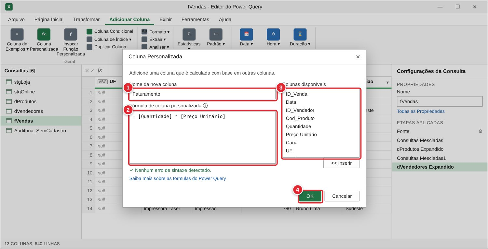
1Nome
2Fórmula
3Duplo clique para inserir
4OK
Ilustração · passo 8.1 · clique para ampliar8.2
Coluna Personalizada: Lucro
Repita com: Nome Lucro e
Lucro
= [Faturamento] - [Quantidade] * [Custo Unitário]
Com o P011 cadastrado no 7.5, nenhuma linha fica com Lucro null.
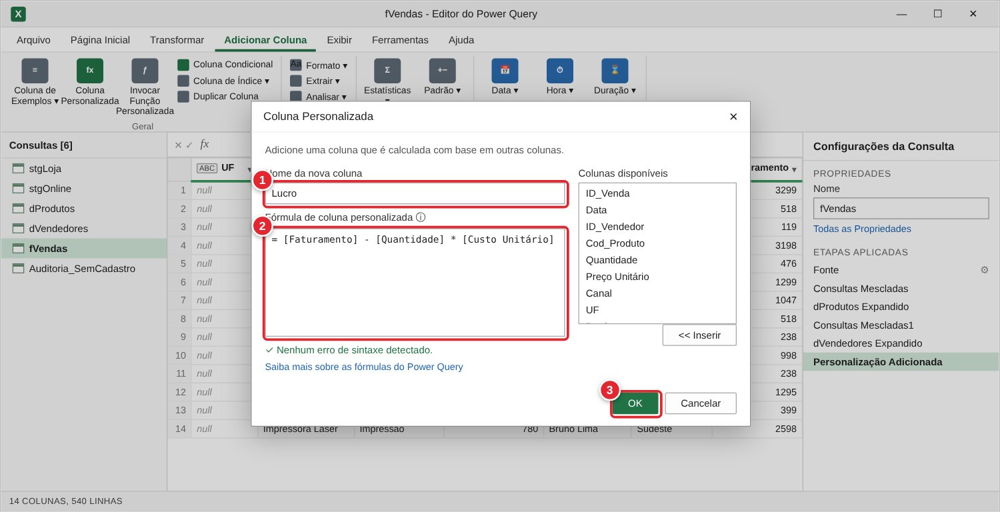
1Nome
2Fórmula
3OK
Ilustração · passo 8.2 · clique para ampliar8.3
Defina o tipo Moeda em Faturamento e Lucro
Clique no cabeçalho Faturamento, segure Ctrl e clique em Lucro. Vá em Transformar›Tipo de Dados›Moeda. O ícone muda para $.
Dica
Em versões antigas do Excel, Moeda aparece como Número Decimal Fixo. É o mesmo tipo (Currency.Type), com 4 casas decimais fixas, ideal para dinheiro.
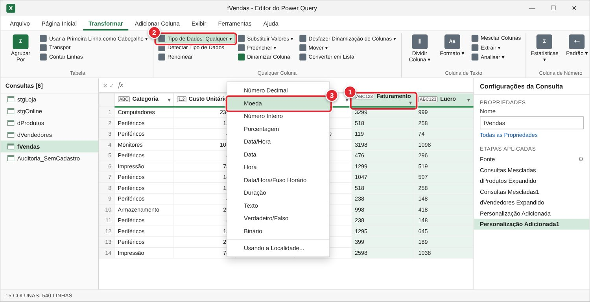
1Faturamento + Ctrl + Lucro
2Tipo de Dados
3Moeda
Ilustração · passo 8.3 · clique para ampliar8.4
Extraia Mês e Nome do Mês da coluna Data
Clique no cabeçalho Data. Vá em Adicionar Coluna›Data›Mês›Mês: nasce a coluna Mês (1, 2, 3). Clique de novo em Data e faça Adicionar Coluna›Data›Mês›Nome do Mês: nasce Nome do Mês (janeiro, fevereiro, março).
Atenção
Use a guia Adicionar Coluna, não Transformar. Em Transformar, a coluna Data seria substituída pelo mês e você perderia a data.
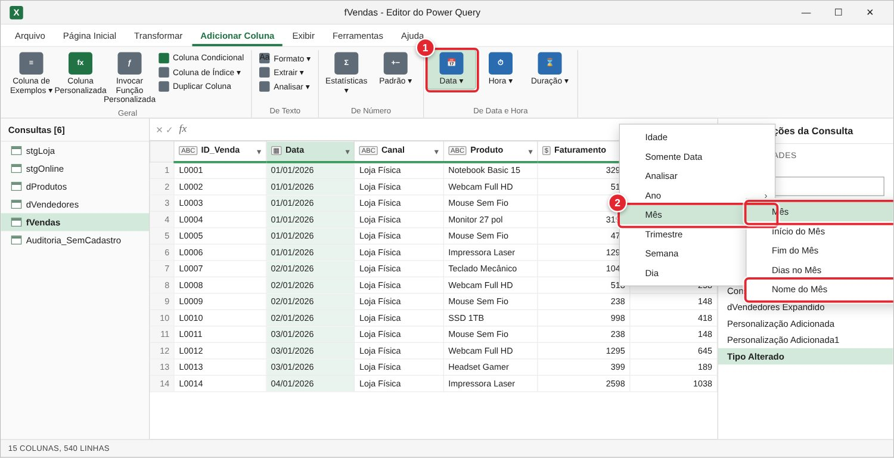
1Data
2Mês
3Mês (número)
4Nome do Mês
Ilustração · passo 8.4 · clique para ampliar8.5
Coluna Condicional: Faixa da venda (o SE do Power Query)
Adicionar Coluna›Coluna Condicional. Preencha de cima para baixo:
Nome: Faixa
Se Faturamento é maior ou igual a3000EntãoGrande
Clique em Adicionar Cláusula. Senão Se Faturamento é maior ou igual a1000EntãoMédia
Senão: Pequena
OK e defina o tipo Texto. Resultado nas 540 linhas: 116 Grande, 162 Média, 262 Pequena.
Por que assim?
É o mesmo raciocínio de =SE(K2>=3000;"Grande";SE(K2>=1000;"Média";"Pequena")). A ordem importa: teste do maior para o menor, senão tudo cai na primeira condição.
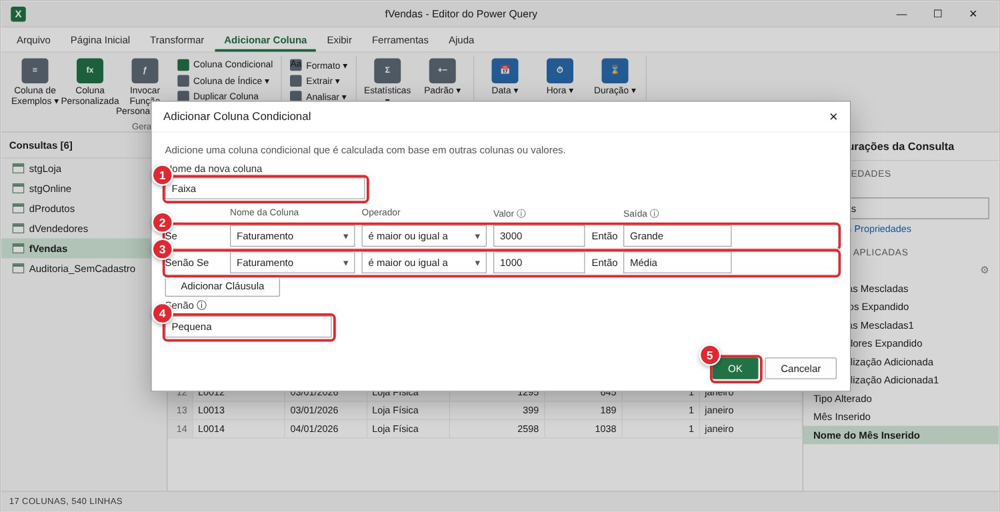
1Nome
2Se
3Senão Se
4Senão
5OK
Ilustração · passo 8.5 · clique para ampliar
Módulo 9
A SOMASES do Power Query: Agrupar Por e Dinamizar
Vamos criar duas tabelas resumo dentro do Power Query: o realizado de cada vendedor por mês, comparado com a meta, e a matriz Categoria × Mês que fizemos com SOMASES. Depois conferimos se os números batem.
9.1
Botão direito em fVendas › Referência
No painel Consultas, clique com o botão direito em fVendas › Referência. Nasce fVendas (2), que começa exatamente onde fVendas termina. Renomeie para Realizado_Mensal.
Opção
O que faz
Quando usar
Referência
nova consulta que lê o resultado da outra; se a fVendas mudar, esta muda junto
resumos a partir da base pronta (nosso caso)
Duplicar
cópia independente de todas as etapas
testar uma variação sem mexer na original
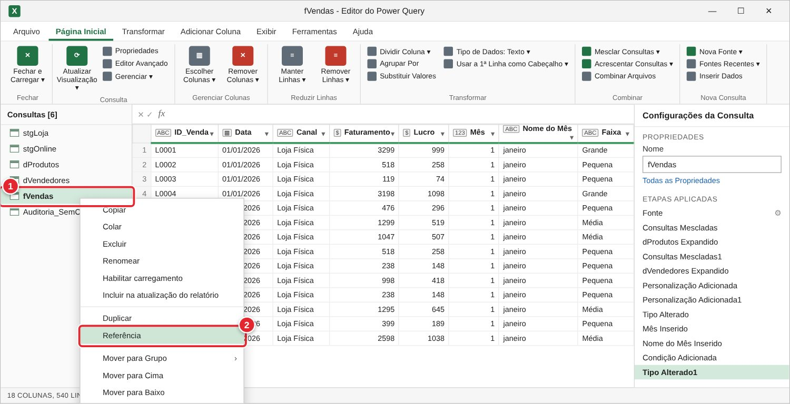
1Botão direito em fVendas
2Referência
Ilustração · passo 9.1 · clique para ampliar9.2
Transformar › Agrupar Por (Avançado)
Com Realizado_Mensal selecionada: Transformar›Agrupar Por.
Marque Avançado.
Agrupamentos: escolha ID_Vendedor; clique em Adicionar agrupamento e escolha Mês.
1ª agregação: nome Realizado, operação Soma, coluna Faturamento.
Clique em Adicionar agregação: nome Qtd Vendas, operação Contar Linhas.
OK.
SOMASES (passo 3.5)
Agrupar Por
intervalo_soma = tbLoja[Faturamento]
Operação Soma, Coluna Faturamento
critérios = ID_Vendedor (e Mês)
colunas de agrupamento
uma fórmula por célula
uma etapa gera todas as combinações
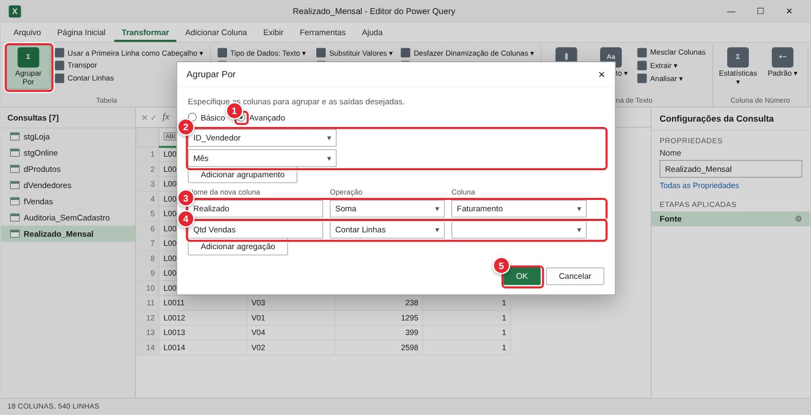
1Avançado
2Agrupar por vendedor e mês
3Soma do Faturamento
4Contar Linhas
5OK
Ilustração · passo 9.2 · clique para ampliar9.3
Confira o resultado: 21 linhas (7 vendedores × 3 meses)
As 540 vendas viraram 21 linhas: uma para cada vendedor em cada mês. Exemplo: V01, mês 1 = R$ 52.534 em 29 vendas.
Dica
Se aparecerem mais de 21 linhas, alguma venda ficou sem ID_Vendedor (volte ao 5.12) ou o Mês veio como texto.
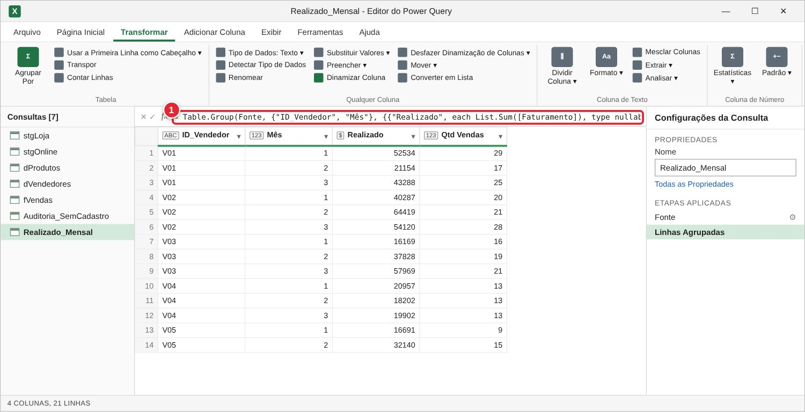
1Código M do Agrupar
Ilustração · passo 9.3 · clique para ampliar9.4
Traga a meta e calcule o % Atingido
Mesclar Consultas: ID_Vendedor ↔ dVendedoresID_Vendedor, Externa esquerda, OK.
Expanda (⇔) só Vendedor e Meta Mensal, sem prefixo.
Tipo da coluna: Transformar›Tipo de Dados›Porcentagem.
Confira: Ana Souza em janeiro = 150,10%; Elisa Prado em março = 32,43%.
Por que assim?
Agora a meta está no lugar certo: uma linha por vendedor por mês. Na tabela dinâmica, somar Realizado e Meta dessas linhas dá o trimestre certinho (Meta Mensal × 3).
1Etapas do resumo
Ilustração · passo 9.4 · clique para ampliar9.5
Resumo_Loja: Agrupar Categoria e Mês e Dinamizar o mês
Vamos reproduzir a matriz do passo 3.4 (só loja física):
Botão direito em fVendas › Referência. Renomeie para Resumo_Loja.
Setinha do cabeçalho Canal › desmarque Online › OK (fica só Loja Física, 300 linhas).
Transformar›Agrupar Por › Avançado: agrupar por Categoria e Mês; nome Faturamento, Soma de Faturamento › OK (15 linhas).
Clique no cabeçalho Mês › Transformar›Dinamizar Coluna. Coluna de Valores: Faturamento; Opções Avançadas: Soma › OK.
Explicando bem fácil
Dinamizar pega os valores de uma coluna (1, 2, 3) e transforma em cabeçalhos. É o que a tabela dinâmica faz quando você arrasta um campo para Colunas.
1Dinamizar Coluna
2Coluna de Valores
3Soma
4OK
Ilustração · passo 9.5 · clique para ampliar9.6
Confira: fórmulas e Power Query precisam dar o mesmo número
Compare número por número a matriz do Excel (passo 3.4) com a Resumo_Loja. A ordem das categorias pode mudar; os valores, não.
No arquivo de fórmulas, a aba Resumo tem o bloco 4) Conferência (cabeçalhos na linha 30). Preencha a linha 31:
Linha 31 · Conferência
A31 (Total fórmulas): =SOMA(tbLoja[Faturamento])
B31 (Total Power Query): digite 566870 (o total da Loja Física na Resumo_Loja)
C31 (Diferença): =A31-B31
D31 (Status): =SE(ARRED(C31;2)=0;"✔ Bateu";"✘ Conferir")
Resultado esperado: Diferença = R$ 0,00 e Status = ✔ Bateu.
Por que assim?
Conferir um método com outro é prática profissional. Quando um processo novo em Power Query substitui uma planilha antiga de fórmulas, rode os dois em paralelo no primeiro mês e só desligue o antigo quando a diferença for zero.
1Resultado com fórmulas
2Resultado com Power Query
3Diferença zero
Ilustração · passo 9.6 · clique para ampliar
Módulo 10
Por trás dos cliques: a linguagem M
Cada clique virou uma linha de código. Ler o código ajuda a turma a entender que o Power Query é uma receita que se repete sozinha, e permite colar a solução pronta caso alguém se perca.
10.1
Abra o Editor Avançado e leia a receita
Com fVendas selecionada, clique em Página Inicial›Editor Avançado. Leia as etapas em voz alta com a turma: combinar → mesclar produtos → expandir → mesclar vendedores → expandir → calcular.
Abaixo está o código de todas as consultas da aula, comentado. Se um aluno se perder, ele pode criar uma Consulta Nula (Página Inicial›Nova Fonte›Outras Fontes›Consulta Nula), abrir o Editor Avançado, colar o código e dar o nome certo. Ajuste só o caminho C:\Users\Aluno\... para o da máquina.
Atenção
Crie as consultas nesta ordem para não dar erro de referência: stgLoja, stgOnline, dProdutos, dVendedores (pelo Navegador), depois fVendas e por último Auditoria_SemCadastro, Realizado_Mensal e Resumo_Loja.
1Código M da consulta
2Sem erro de sintaxe
3Concluído
Ilustração · passo 10.1 · clique para ampliar
stgLoja · código M comentado
let
// 1. Fonte: abre o arquivo da loja (troque o caminho se a pasta for outra)
Fonte = Excel.Workbook(File.Contents("C:\Users\Aluno\Documents\Aula13_Final\Fontes\Vendas_Loja.xlsx"), null, true),
// 2. Navegação: escolhe a TABELA tbLoja (não a planilha)
tbLoja_Table = Fonte{[Item="tbLoja",Kind="Table"]}[Data],
// 3. Tipos: Data como data e Preço como decimal (passo 5.5)
#"Tipo Alterado" = Table.TransformColumnTypes(tbLoja_Table,{{"ID_Venda", type text}, {"Data", type date}, {"ID_Vendedor", type text}, {"Cod_Produto", type text}, {"Quantidade", Int64.Type}, {"Preço Unitário", type number}}),
// 4. Coluna fixa que identifica o canal (passo 5.6)
#"Personalização Adicionada" = Table.AddColumn(#"Tipo Alterado", "Canal", each "Loja Física"),
#"Tipo Alterado1" = Table.TransformColumnTypes(#"Personalização Adicionada",{{"Canal", type text}})
in
#"Tipo Alterado1"
stgOnline · código M comentado
let
// 1. Lê o CSV: separador ; e codificação UTF-8 (65001) — passo 5.8
Fonte = Csv.Document(File.Contents("C:\Users\Aluno\Documents\Aula13_Final\Fontes\Vendas_Online.csv"),[Delimiter=";", Columns=6, Encoding=65001, QuoteStyle=QuoteStyle.None]),
#"Cabeçalhos Promovidos" = Table.PromoteHeaders(Fonte, [PromoteAllScalars=true]),
#"Tipo Alterado" = Table.TransformColumnTypes(#"Cabeçalhos Promovidos",{{"Pedido", type text}, {"Data_Pedido", type date}, {"UF", type text}, {"SKU", type text}, {"Qtd", Int64.Type}, {"Valor_Unit", type number}}),
// 2. Remove as linhas vazias filtrando a chave (passo 5.9)
#"Linhas Filtradas" = Table.SelectRows(#"Tipo Alterado", each [Pedido] <> null and [Pedido] <> ""),
// 3. Mesmos nomes da loja para o Acrescentar funcionar (passo 5.10)
#"Colunas Renomeadas" = Table.RenameColumns(#"Linhas Filtradas",{{"Pedido", "ID_Venda"}, {"Data_Pedido", "Data"}, {"SKU", "Cod_Produto"}, {"Qtd", "Quantidade"}, {"Valor_Unit", "Preço Unitário"}}),
// 4. p006 -> P006: a mesclagem diferencia maiúsculas (passo 5.11)
#"Texto em Maiúscula" = Table.TransformColumns(#"Colunas Renomeadas",{{"Cod_Produto", Text.Upper, type text}}),
// 5. Vendedor e canal fixos do e-commerce (passo 5.12)
#"Personalização Adicionada" = Table.AddColumn(#"Texto em Maiúscula", "ID_Vendedor", each "V07"),
#"Personalização Adicionada1" = Table.AddColumn(#"Personalização Adicionada", "Canal", each "Online"),
#"Tipo Alterado1" = Table.TransformColumnTypes(#"Personalização Adicionada1",{{"ID_Vendedor", type text}, {"Canal", type text}})
in
#"Tipo Alterado1"
fVendas · código M comentado
let
// 1. ACRESCENTAR: empilha loja (300) + online (240) = 540 linhas (módulo 6)
Fonte = Table.Combine({stgLoja, stgOnline}),
// 2. MESCLAR com o cadastro de produtos = PROCX (passos 7.1 e 7.2)
#"Consultas Mescladas" = Table.NestedJoin(Fonte, {"Cod_Produto"}, dProdutos, {"Cod_Produto"}, "dProdutos", JoinKind.LeftOuter),
#"dProdutos Expandido" = Table.ExpandTableColumn(#"Consultas Mescladas", "dProdutos", {"Produto", "Categoria", "Custo Unitário"}, {"Produto", "Categoria", "Custo Unitário"}),
// 3. MESCLAR com o cadastro de vendedores (passo 7.7)
#"Consultas Mescladas1" = Table.NestedJoin(#"dProdutos Expandido", {"ID_Vendedor"}, dVendedores, {"ID_Vendedor"}, "dVendedores", JoinKind.LeftOuter),
#"dVendedores Expandido" = Table.ExpandTableColumn(#"Consultas Mescladas1", "dVendedores", {"Vendedor", "Região"}, {"Vendedor", "Região"}),
// 4. Colunas calculadas (módulo 8)
#"Personalização Adicionada" = Table.AddColumn(#"dVendedores Expandido", "Faturamento", each [Quantidade] * [Preço Unitário]),
#"Personalização Adicionada1" = Table.AddColumn(#"Personalização Adicionada", "Lucro", each [Faturamento] - [Quantidade] * [Custo Unitário]),
#"Tipo Alterado" = Table.TransformColumnTypes(#"Personalização Adicionada1",{{"Faturamento", Currency.Type}, {"Lucro", Currency.Type}}),
#"Mês Inserido" = Table.AddColumn(#"Tipo Alterado", "Mês", each Date.Month([Data]), Int64.Type),
#"Nome do Mês Inserido" = Table.AddColumn(#"Mês Inserido", "Nome do Mês", each Date.MonthName([Data]), type text),
// 5. Coluna Condicional = SE aninhado (passo 8.5)
#"Condição Adicionada" = Table.AddColumn(#"Nome do Mês Inserido", "Faixa", each if [Faturamento] >= 3000 then "Grande" else if [Faturamento] >= 1000 then "Média" else "Pequena"),
#"Tipo Alterado1" = Table.TransformColumnTypes(#"Condição Adicionada",{{"Faixa", type text}})
in
#"Tipo Alterado1"
Auditoria_SemCadastro · código M comentado
let
// Antiesquerda: vendas cujo Cod_Produto NÃO existe em dProdutos (passo 7.3)
Fonte = Table.NestedJoin(fVendas, {"Cod_Produto"}, dProdutos, {"Cod_Produto"}, "dProdutos", JoinKind.LeftAnti)
in
Fonte
Realizado_Mensal · código M comentado
let
Fonte = fVendas,
// AGRUPAR POR = SOMASES de todas as combinações vendedor x mês (passo 9.2)
#"Linhas Agrupadas" = Table.Group(Fonte, {"ID_Vendedor", "Mês"}, {{"Realizado", each List.Sum([Faturamento]), type nullable number}, {"Qtd Vendas", each Table.RowCount(_), Int64.Type}}),
// Meta entra DEPOIS de agrupar: uma por vendedor por mês (passo 9.4)
#"Consultas Mescladas" = Table.NestedJoin(#"Linhas Agrupadas", {"ID_Vendedor"}, dVendedores, {"ID_Vendedor"}, "dVendedores", JoinKind.LeftOuter),
#"dVendedores Expandido" = Table.ExpandTableColumn(#"Consultas Mescladas", "dVendedores", {"Vendedor", "Meta Mensal"}, {"Vendedor", "Meta Mensal"}),
#"Personalização Adicionada" = Table.AddColumn(#"dVendedores Expandido", "% Atingido", each [Realizado] / [Meta Mensal]),
#"Tipo Alterado" = Table.TransformColumnTypes(#"Personalização Adicionada",{{"% Atingido", Percentage.Type}, {"Realizado", Currency.Type}})
in
#"Tipo Alterado"
Resumo_Loja · código M comentado
let
Fonte = fVendas,
#"Linhas Filtradas" = Table.SelectRows(Fonte, each ([Canal] = "Loja Física")),
#"Linhas Agrupadas" = Table.Group(#"Linhas Filtradas", {"Categoria", "Mês"}, {{"Faturamento", each List.Sum([Faturamento]), type nullable number}}),
// DINAMIZAR: os meses (1, 2, 3) viram colunas — mesma matriz da SOMASES (passo 9.5)
#"Coluna Dinamizada" = Table.Pivot(Table.TransformColumnTypes(#"Linhas Agrupadas", {{"Mês", type text}}, "pt-BR"), List.Distinct(Table.TransformColumnTypes(#"Linhas Agrupadas", {{"Mês", type text}}, "pt-BR")[Mês]), "Mês", "Faturamento", List.Sum)
in
#"Coluna Dinamizada"
Função M
O que faz
Clique equivalente
Equivalente em fórmula
Table.Combine
empilha tabelas
Acrescentar Consultas
copiar e colar embaixo
Table.NestedJoin + Table.ExpandTableColumn
junta pela chave e abre as colunas
Mesclar Consultas + ⇔
PROCX
JoinKind.LeftAnti
o que não tem par
Junção Antiesquerda
PROCX com "Não cadastrado" + filtro
Table.Group
resume por chaves
Agrupar Por
SOMASES / CONT.SES
Table.Pivot
valores de linha viram colunas
Dinamizar Coluna
matriz de SOMASES com $
Table.SelectRows
filtra linhas
setinha do filtro
Filtro / FILTRO
Text.Upper
maiúsculas
Formato › MAIÚSCULAS
MAIÚSCULA
if ... then ... else
condição
Coluna Condicional
SE
Date.Month / Date.MonthName
parte da data
Data › Mês
MÊS / TEXTO(...;"mmmm")
Módulo 11
Carregar no Excel: só o que o relatório precisa
Temos 8 consultas, mas o dashboard só precisa de três tabelas na planilha: fVendas, Realizado_Mensal e Resumo_Loja. O resto fica como Apenas Conexão: existe, é atualizado, mas não ocupa espaço.
11.1
Fechar e Carregar Para...
Na guia Página Inicial do editor, clique na setinha embaixo de Fechar e Carregar e escolha Fechar e Carregar Para....
Atenção
O botão direto (sem a setinha) carregaria as 8 consultas como 8 tabelas em 8 planilhas novas. Por isso usamos o Para....
1Fechar e Carregar (setinha)
2Fechar e Carregar Para...
Ilustração · passo 11.1 · clique para ampliar11.2
Escolha Apenas Criar Conexão
Na janela Importar Dados, marque Apenas Criar Conexão e clique em OK. O editor fecha e, à direita do Excel, abre o painel Consultas e Conexões com as 8 consultas, todas como Somente conexão.
Dica
Essa escolha vale para todas as consultas novas de uma vez. No próximo passo escolhemos, uma a uma, as três que viram tabela.
1Apenas Criar Conexão
2OK
Ilustração · passo 11.2 · clique para ampliar11.3
Botão direito em fVendas › Carregar Para... › Tabela
No painel Consultas e Conexões, clique com o botão direito em fVendas › Carregar Para.... Agora marque Tabela e Nova planilha › OK.
Repita para Realizado_Mensal e Resumo_Loja. Renomeie as três planilhas novas para Base, Metas e Conferência (duplo clique na aba).
O painel deve mostrar fVendas: 540 linhas carregadas, Realizado_Mensal: 21 e Resumo_Loja: 5. As demais continuam Somente conexão. Apague a Planilha1 vazia (botão direito na aba › Excluir) e salve.
Dica
Passe o mouse sobre uma consulta no painel: aparece uma prévia com a data da última atualização e as colunas. Ótimo para conferir sem abrir o editor.
1540 linhas carregadas
2Planilha Base
Ilustração · passo 11.4 · clique para ampliar
Módulo 12
Montar o dashboard interativo
A base está pronta e limpa. Agora o Excel faz o que sabe: tabelas dinâmicas leem a fVendas, gráficos mostram, segmentações filtram tudo com um clique.
12.1
Inserir › Tabela Dinâmica › Da Tabela/Intervalo
Clique em qualquer célula da tabela na planilha Base. Vá em Inserir›Tabela Dinâmica›Da Tabela/Intervalo. O campo já vem com fVendas. Deixe Nova Planilha e clique em OK. Renomeie a planilha nova para Tabelas.
Por que assim?
Usar o nome da tabela (fVendas) como origem, e não A1:R541, faz a dinâmica enxergar as linhas novas de abril sem você mexer em nada.
1Tabela Dinâmica
2Origem fVendas
3Nova Planilha
4OK
Ilustração · passo 12.1 · clique para ampliar12.2
ptMes: Nome do Mês nas Linhas, Canal nas Colunas, Faturamento em Valores
No painel Campos da Tabela Dinâmica (direita):
Marque Nome do Mês: vai para Linhas.
ArrasteCanal até a caixa Colunas (segure o botão do mouse sobre o nome, leve até a caixa e solte).
Marque Faturamento: vai para Valores como Soma.
Dê um nome à dinâmica: Análise de Tabela Dinâmica›Tabela Dinâmica›Nome › ptMesEnter. Selecione os valores e formate com Ctrl+Shift+4.
Confira: Total Geral = R$ 1.070.691,00, sendo R$ 566.870,00 da loja (o mesmo número das fórmulas!) e R$ 503.821,00 do online.
1Linhas
2Colunas
3Valores
Ilustração · passo 12.2 · clique para ampliar12.3
Gráfico Dinâmico de Colunas Empilhadas
Clique dentro da ptMes. Análise de Tabela Dinâmica›Gráfico Dinâmico › Colunas › Coluna Empilhada › OK.
Crie uma planilha nova chamada Dashboard. Volte em Tabelas, clique na borda do gráfico, Ctrl+X, vá ao Dashboard e Ctrl+V.
Por que assim?
Empilhada mostra duas coisas num gráfico só: o total do mês (altura da coluna) e quanto veio de cada canal (as cores).
1Colunas
2Coluna Empilhada
3OK
Ilustração · passo 12.3 · clique para ampliar12.4
Crie as outras tabelas dinâmicas (copiando a primeira)
Para cada visual do dashboard, uma tabela dinâmica na planilha Tabelas. Jeito rápido: selecione a ptMes inteira, Ctrl+C, clique numa célula vazia à direita, Ctrl+V, e troque os campos. Copiando, todas usam o mesmo cache, e isso é o que permite uma segmentação filtrar todas.
Nome
Linhas
Colunas
Valores
Visual
ptKPI (em R3)
—
—
Soma de Faturamento, Soma de Lucro, Contagem de ID_Venda
Cartões
ptCanal
Canal
—
Soma de Faturamento
Rosca
ptCategoria
Categoria
—
Soma de Faturamento (classificar maior→menor)
Barras
ptVendedor
Vendedor
—
Soma de Faturamento (menor→maior)
Barras (ranking)
Na ptKPI, renomeie os valores (duplo clique no cabeçalho do campo › Nome Personalizado) para Total Faturamento, Total Lucro e Qtd Vendas. A ptKPI não vira gráfico: ela alimenta os cartões do passo 12.6. Para ptCanal, ptCategoria e ptVendedor, crie o gráfico (como no 12.3) e leve para o Dashboard.
1ptKPI
2ptCanal
3ptCategoria
4ptVendedor
Ilustração · passo 12.4 · clique para ampliar12.5
ptMeta: Meta x Realizado com Campo Calculado
Esta dinâmica usa outra origem: clique na tabela da planilha Metas › Inserir›Tabela Dinâmica › Realizado_Mensal › Planilha Existente: Tabelas!A30 › OK. Nome: ptMeta.
Vendedor em Linhas; Realizado e Meta Mensal em Valores (Soma). A soma das 3 metas mensais é a meta do trimestre.
Análise de Tabela Dinâmica›Campos, Itens e Conjuntos›Campo Calculado. Nome % Atingido, fórmula = Realizado / 'Meta Mensal' (dê duplo clique nos campos da lista) › OK. Formate como %.
Crie um Gráfico Dinâmico de Barras Agrupadas e leve para o Dashboard.
Atenção
Nunca some a coluna % Atingido do Power Query numa dinâmica: 150% + 60% + 124% = 334% não significa nada. O Campo Calculado divide as somas (realizado total ÷ meta total), que é o percentual correto do trimestre.
1Nome
2Fórmula do campo calculado
3OK
Ilustração · passo 12.5 · clique para ampliar12.6
Cartões de KPI com INFODADOSTABELADINÂMICA
No Dashboard, deixe as colunas A a C para as segmentações e monte os 5 cartões assim: títulos na linha 4 e valores na linha 5, em E (Faturamento), I (Lucro), M (Nº de vendas), Q (Ticket médio) e U (Margem). Para os três primeiros: digite =, vá até a planilha Tabelas, clique no valor da ptKPI e tecle Enter. O Excel escreve a fórmula sozinho:
A INFODADOSTABELADINÂMICA lê o valor pelo nome do campo, não pela posição. Se a dinâmica crescer ou mudar de lugar, o cartão continua certo. Por isso não use =Tabelas!S4.
1Cartões de KPI
Ilustração · passo 12.6 · clique para ampliar12.7
Insira as segmentações Canal, Região e Categoria
Clique no gráfico de meses. Análise de Gráfico Dinâmico›Inserir Segmentação de Dados. Marque Canal, Região e Categoria › OK. Arraste as três caixas para uma coluna à esquerda e ajuste a largura.
Explicando bem fácil
Segmentação é o "botão de controle remoto" do dashboard: quem usa não precisa saber nada de tabela dinâmica.
1Canal
2Região
3Categoria
4OK
Ilustração · passo 12.7 · clique para ampliar12.8
Conexões de Relatório: ligue cada segmentação a todas as dinâmicas
Uma segmentação nasce ligada só à dinâmica do gráfico em que você clicou. Clique com o botão direito na segmentação Canal › Conexões de Relatório... › marque ptCanal, ptCategoria, ptKPI, ptMes e ptVendedor › OK. Repita para Região e Categoria.
Atenção
A ptMeta não aparece na lista: ela vem da Realizado_Mensal, outra origem. É proposital: a meta é por vendedor, e o gráfico Meta x Realizado mostra sempre o quadro geral. (Desafio no exercício E5.)
1Todas as dinâmicas marcadas
2OK
Ilustração · passo 12.8 · clique para ampliar12.9
Acabamento: o painel pronto
Para o visual de painel: em Exibir desmarque Linhas de Grade e Títulos; esconda os botões de campo dos gráficos (Análise de Gráfico Dinâmico›Botões de Campo); use zoom entre 60% e 80%; mescle B2:W2 para o título com fundo verde. Resultado com janeiro a março:
Cartão
Valor esperado
Faturamento
R$ 1.070.691
Lucro
R$ 375.496
Nº de vendas
540
Ticket médio
R$ 1.982,76
Margem
35,1%
Ilustração · passo 12.9 · clique para ampliar12.10
Teste: clique em Online
Na segmentação Canal, clique em Online. Todos os visuais ligados respondem juntos: 240 vendas, faturamento R$ 503.821, margem 33,6%. Para limpar o filtro, clique no ícone de funil com X (⊘) no canto da segmentação.
Por que assim?
Pergunta para a turma: por que a margem do online (33,6%) é menor que a geral (35,1%)? Pista: abra o Vendas_Online.csv e compare o Valor_Unit com o Preço Tabela do cadastro. (Resposta: o site dá descontos de 5% e 10% em parte dos pedidos; o custo é o mesmo, então o lucro por venda cai.)
1Filtro Online
2Cartões recalculados
Ilustração · passo 12.10 · clique para ampliar
Módulo 13
Chegou abril: atualizar com um clique
O momento de mostrar à turma por que tudo isso vale a pena. O sistema exportou os arquivos de novo, agora com abril. Ninguém refaz nada.
13.1
Copie os arquivos de Extra_Abril para Fontes
Feche o Cadastros.xlsx e qualquer outro arquivo da pasta Fontes que estiver aberto.
Abra a pasta Extra_Abril, selecione os dois arquivos (Ctrl+A) e copie (Ctrl+C).
Abra a pasta Fontes e cole (Ctrl+V). O Windows avisa que os arquivos já existem: clique em Substituir os arquivos no destino.
Atenção
O Cadastros.xlsx não está na Extra_Abril de propósito: ele continua sendo o seu, com o P011 que você cadastrou no passo 7.5.
1Substituir os arquivos no destino
Ilustração · passo 13.1 · clique para ampliar13.2
Dados › Atualizar Tudo (Ctrl+Alt+F5)
Volte ao Aula13_PowerQuery.xlsx. Dados›Atualizar Tudo ou Ctrl+Alt+F5. O Power Query relê os três arquivos, refaz todas as etapas (limpar, renomear, juntar, mesclar, calcular, agrupar) e as dinâmicas recalculam.
Dica
Se os cartões não mudarem na primeira vez, clique em Atualizar Tudo de novo: com a atualização em segundo plano, as dinâmicas podem atualizar antes das consultas terminarem. Para resolver de vez: no painel Consultas e Conexões, botão direito em cada consulta › Propriedades › desmarque Habilitar atualização em segundo plano.
1Atualizar Tudo
2Atualizar Tudo (menu)
Ilustração · passo 13.2 · clique para ampliar13.3
Confira o dashboard com abril
Abril aparece no gráfico de meses e os cartões mudam sozinhos:
Indicador
Jan–Mar
Jan–Abr
Nº de vendas
540
732
Faturamento
R$ 1.070.691,00
R$ 1.429.437,70
Lucro
R$ 375.496,00
R$ 508.747,70
Ticket médio
R$ 1.982,76
R$ 1.952,78
Realizado_Mensal
21 linhas
28 linhas
Auditoria_SemCadastro
0 linhas
0 linhas
Dica
Confira a Auditoria_SemCadastro no painel: continua com 0 linhas, ou seja, abril não trouxe nenhum produto novo sem cadastro. Se trouxesse, ela acusaria na hora.
Ilustração · passo 13.3 · clique para ampliar13.4
Compare com o arquivo de fórmulas
Abra o Aula13_Formulas.xlsx. Ele não mudou: continua só com janeiro a março e só com a loja física. Para chegar ao mesmo resultado seria preciso copiar abril da loja, montar o online à mão (módulo 4), estender as PROCX e conferir os intervalos das SOMASES.
Feche a aula com a turma respondendo: "Quando eu uso fórmula e quando eu uso Power Query?" Uma boa resposta:
Use fórmulas quando…
Use Power Query quando…
a pergunta é pontual ("quanto vendeu o Bruno em março?")
o processo se repete todo mês
a base é pequena e já está numa tabela
os dados vêm de vários arquivos, sistemas ou formatos
alguém vai digitar e ajustar valores à mão
é preciso limpar (espaços, maiúsculas, linhas vazias, colunas com outro nome)
você quer conferir um número rapidamente
você precisa de auditoria (o que falta cadastrar?)
o resultado é uma célula
o resultado é uma tabela que alimenta dinâmicas e dashboards
E1Vendas por UF do e-commerceQuais 3 estados mais compram no site?
Crie uma tabela dinâmica da fVendas com UF em Linhas e Soma de Faturamento em Valores. Filtre Canal = Online (as vendas da loja têm UF vazia). Classifique do maior para o menor. Com fórmula: =SOMASES(fVendas[Faturamento];fVendas[UF];"SP").
E2Contar vendas por faixaQuantas vendas Grandes cada vendedor fez?
Na dinâmica: Vendedor em Linhas, Faixa em Colunas, Contagem de ID_Venda em Valores. Com fórmula, na planilha Base: =CONT.SES(fVendas[Vendedor];"Ana Souza";fVendas[Faixa];"Grande"). Compare os dois números.
E3Três ou mais tabelasUm marketplace mandou o arquivo Vendas_Marketplace.csv. Como entra no processo?
Crie stgMarketplace igual à stgOnline (renomear colunas, MAIÚSCULAS, ID_Vendedor e Canal fixos). Depois edite a etapa Fonte da fVendas (engrenagem) › Três ou mais tabelas › adicione stgMarketplace. No M: Table.Combine({stgLoja, stgOnline, stgMarketplace}).
E4Caminho como parâmetroFaça o arquivo funcionar no computador de qualquer aluno.
Página Inicial › Gerenciar Parâmetros › Novo Parâmetro: nome PastaFontes, tipo Texto, valor C:\Users\SeuNome\Documents\Aula13_Final\Fontes\. Nas fontes, troque o texto fixo por File.Contents(PastaFontes & "Vendas_Loja.xlsx") e equivalentes. Para mudar de máquina, só o parâmetro muda.
E5Meta x Realizado filtrávelFaça a segmentação de Região também filtrar o gráfico de metas.
As segmentações só conectam dinâmicas com a mesma origem. Solução 1: na Realizado_Mensal, agrupe também por Região (mescle dVendedores antes de agrupar) e crie uma segmentação própria. Solução 2 (avançada): carregar fVendas, Realizado_Mensal e dVendedores no Modelo de Dados e relacioná-las pelo ID_Vendedor; aí uma segmentação de dVendedores filtra as duas.
E6Investigar a mesclagemDesfaça o passo 5.11 (exclua a etapa Texto em Maiúscula). O que muda?
A mesclagem com dProdutos cai para 536 de 540: os 4 códigos minúsculos (p006, p007, p008) ficam sem par, mesmo com o P011 já cadastrado. A Auditoria_SemCadastro passa a listar essas 4 linhas e o lucro delas fica null. Volte a etapa com Ctrl+Z ou recrie-a. Lição: PROCX ignora maiúsculas, o Power Query não.
Erros comuns e como resolver
Sintoma
Causa
Solução
DataSource.Error: não foi possível encontrar o arquivo
A pasta foi movida ou o arquivo renomeado
Dados › Obter Dados › Configurações de Fonte de Dados › Alterar Fonte (ou exercício E4)
Acrescentar gerou colunas a mais, metade vazia
Nome de coluna diferente (ex.: Preco Unitario sem acento)
Renomeie na stgOnline para o nome idêntico ao da stgLoja
Mesclagem com menos de 540 correspondências
Código minúsculo, espaço sobrando ou produto não cadastrado
MAIÚSCULAS + Cortar na chave; confira a Auditoria_SemCadastro
Lucro vazio (null) em algumas linhas
Custo Unitário veio null da mesclagem
Cadastre o produto na fonte (passo 7.5) e atualize
Data aparece com 00:00:00
Coluna como Data/Hora
Ícone de tipo › Data › Substituir atual
1.599,00 vira erro ou 159900
Excel/Windows em outra localidade
Botão direito no cabeçalho › Alterar Tipo › Usando a Localidade... › Decimal, Português (Brasil)
PROCX dá #ESPALHAR!
Retornando várias colunas dentro de uma tabela
Uma PROCX por coluna, ou use Mesclar
SOMASES dá 0
Mês como texto de um lado e número do outro; ou espaço no critério
Confira o tipo; use MÊS() e o mesmo formato nos dois lados
Meta total absurda (ex.: 300%)
Somou a coluna % Atingido ou comparou com meta de 1 mês
Campo Calculado Realizado/'Meta Mensal'; meta × nº de meses
Segmentação não filtra um gráfico
Conexões de Relatório desmarcada ou origem diferente
Botão direito › Conexões de Relatório; veja exercício E5
Dinâmica não mostra abril
Atualização em segundo plano
Atualizar Tudo de novo ou desmarcar atualização em segundo plano
Cadastros.xlsx não atualiza
O arquivo está aberto sem salvar
Salve e feche o Cadastros.xlsx antes de atualizar
🏆
Parabéns: você concluiu o curso de Excel Avançado!
Da primeira fórmula ao dashboard que se atualiza sozinho. Nesta aula final você usou, juntos, quase tudo o que aprendeu: tabelas, PROCX, SOMASES, referências mistas, SE, Power Query, tabela dinâmica, gráficos e segmentações.
Checklist do projeto final
Aula13_Formulas.xlsx com as colunas G a M e os blocos 1 a 4 do Resumo
Aula13_PowerQuery.xlsx com 8 consultas e Auditoria_SemCadastro em 0 linhas
Conferência com diferença R$ 0,00
Dashboard com 5 cartões, 5 gráficos e 3 segmentações conectadas
Prints ilustrativos que reproduzem a interface do Microsoft Excel (Microsoft 365, em português) com os dados reais desta aula; nomes de menus podem variar um pouco entre versões. Base de vendas fictícia, criada para a aula.